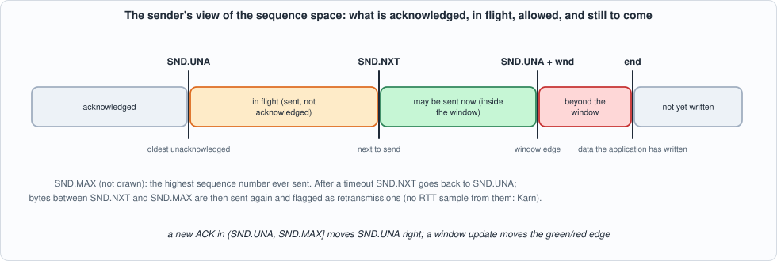
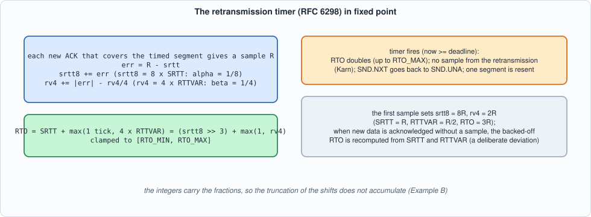
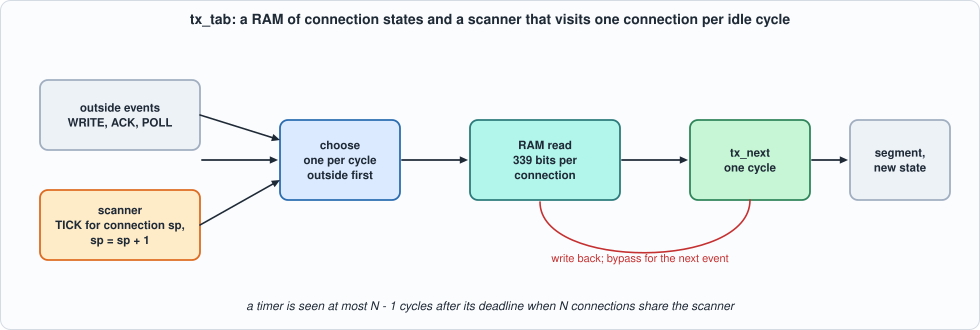
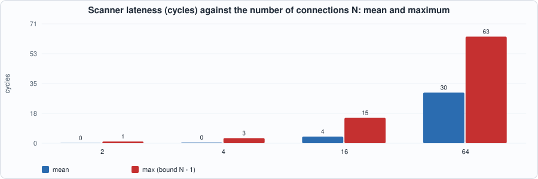
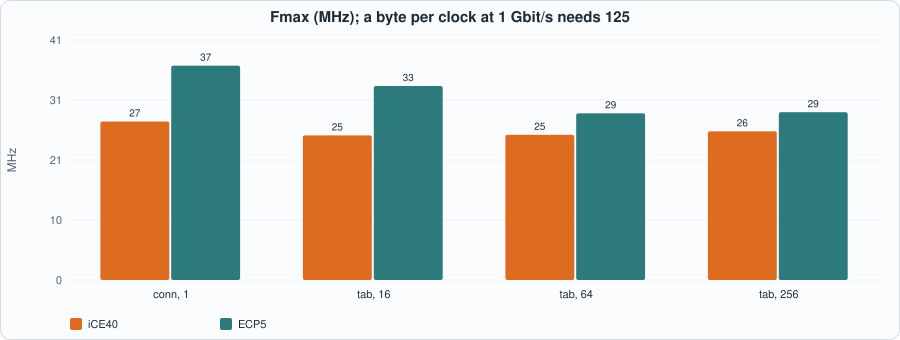
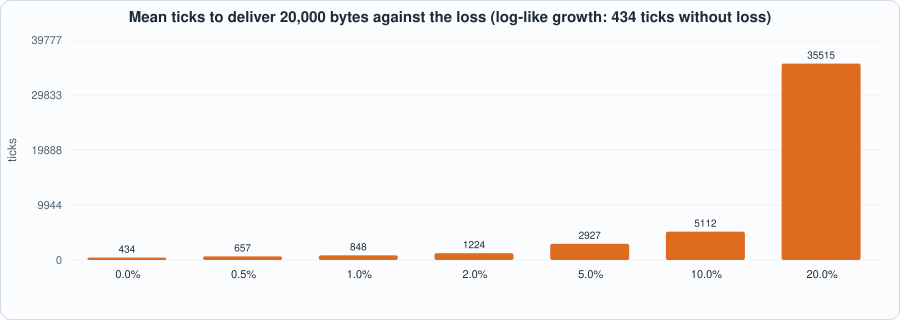

13. The TCP Send Side: Window, Cumulative ACK, the RFC 6298 Retransmission Timer, and a Scanner for Many Timers¶
About the kestrels in this picture
- Mauritius kestrel (Falco punctatus) lives only on the island of Mauritius. By the mid-1970s only a handful of wild birds were known (the figure usually quoted is four); captive breeding and release programmes brought the population back to hundreds.
- Common kestrel (Falco tinnunculus) ranges across Europe, Asia and Africa. It is famous for hovering: it faces the wind and holds its head almost still while its body adjusts, searching the ground below before it drops onto prey. A much-cited study reported that voles' scent trails reflect ultraviolet light, which kestrels may be able to see.
The scene is imaginary and the birds are stylised drawings.
What you will see: the other half of TCP: the sender. Data the application has written is cut into segments and sent within the peer's window; a cumulative ACK moves the window along; and a retransmission timer, whose length is learned from the round-trip times the connection sees (RFC 6298, in fixed point), fires when an ACK does not come, backs off, and sends the data again. The chapter builds the model, a closed loop around it (a lossy channel and an in-order receiver) that delivers every byte, the hardware for one connection and for many connections in a RAM with a scanner that checks their timers, and measures how late the scanner is, how accurate the fixed-point estimator is, and what go-back-N costs under loss.
What you need to know first: Chapter 12 (the receive side: sequence variables, modular comparisons, the table of connections with a bypass) and Chapter 6 (golden models, mutation testing).
What this chapter builds: rtl/tx.sv (tx_next, tx_conn, tx_tab and the pin wrappers), model/tx_gold.py (the sender, the lossy channel and the closed loop, the open-loop fuzz and the stimulus files), tb/tx_tb.sv, and tools/ch13_run.py, tools/ch13_example_a.py, tools/ch13_example_b.py, tools/mut_ch13.py.
Scope: what this chapter leaves out, on purpose
One established connection per state, no congestion control (the peer's window is the only limit), no fast retransmit (no duplicate-ACK counting) and no selective acknowledgement, so recovery is go-back-N after a timeout; no persist timer (a zero window stalls the sender), no options. The data itself is not stored: the sender tracks sequence numbers only (what is in the send buffer is end - SND.UNA bytes). A retransmission after a timeout is one segment of at most one MSS that ignores the window (RFC 5681 allows it). One deliberate deviation from RFC 6298: when new data is acknowledged but no RTT sample can be taken (Karn's rule), the backed-off RTO is recomputed from SRTT and RTTVAR as soon as that ACK arrives; the RFC lets the backed-off value persist until the next sample, and a first version of the model that did so waited the maximum RTO for every segment after a lost flight (the closed loop below ran out of time).
The sender¶
The sender keeps, per connection: SND.UNA (the oldest byte not acknowledged), SND.NXT (the next to send), SND.MAX (the highest ever sent), the window the peer last offered, end (how much the application has written), and the timer state: SRTT and RTTVAR (as integers: srtt8 = 8 x SRTT, rv4 = 4 x RTTVAR), the RTO, the deadline, whether the timer is running, whether a round-trip sample is in progress (which sequence number it waits for and when it started), and whether a first sample has been taken. Everything is 32 bits except the window (16). Time is a 32-bit tick counter now given with every event, and comparisons of times and sequence numbers are modular, as in Chapter 12.

Figure 13.1: acknowledged, in flight, allowed, beyond the window, not yet written.Four events:
- WRITE(n): the application adds
nbytes. - POLL: try to send one segment: its length is the smallest of the MSS, the data not yet sent (
end - SND.NXT) and the window not yet used (SND.UNA + wnd - SND.NXT, zero if negative). The segment is a retransmission ifSND.NXT < SND.MAX. A new (not retransmitted) segment starts a round-trip sample if none is in progress, timing the ACK of its last byte; and the timer is started if it is not running. - ACK(a, w): if
SND.UNA < a <= SND.MAXit is new:SND.UNA = a,SND.NXTis pulled forward if it was behind (go-back-N), the window becomesw, and if a sample is in progress andacovers it, a sampleR = now - startis taken; the timer stops if everything is acknowledged and otherwise restarts for a full RTO. An ACK equal toSND.UNAonly updates the window; any other is ignored. - TICK: if the timer is running and
now >= deadline: timeout. The RTO doubles (up to RTO_MAX), the sample in progress is cancelled (Karn's rule: a sample from retransmitted data is ambiguous),SND.NXTgoes back toSND.UNA, one segment is retransmitted (up to one MSS, but never more than what is outstanding,SND.MAX - SND.UNA), and the timer restarts with the new RTO.
Corrected in Chapter 14
The first version of this chapter retransmitted min(MSS, end - SND.UNA): up to one MSS of what the application had written. When the window had cut a segment short (say 40 bytes in flight) the retransmission sent 100, the last 60 of them bytes never sent before, and left SND.NXT above SND.MAX; an ACK for them was then refused as "beyond SND.MAX" and the transfer crawled at one timeout per segment. Every test of this chapter passed, because none had less than a segment in flight at a timeout. Chapter 14's interoperability run found it (with the invariant SND.UNA <= SND.NXT <= SND.MAX); the model, the RTL, a directed test (section 3b, last row) and a mutant now cover it, and the figures below were measured again after the fix.
The estimator¶

Figure 13.2: RFC 6298 as integers.RFC 6298: the first sample R sets SRTT = R, RTTVAR = R/2; later samples update RTTVAR = 3/4 RTTVAR + 1/4 |SRTT - R| and SRTT = 7/8 SRTT + 1/8 R; RTO = SRTT + max(G, 4 RTTVAR), clamped to a minimum and a maximum. Kept as srtt8 = 8 SRTT and rv4 = 4 RTTVAR, every update is an integer add and a shift: err = R - (srtt8 >> 3), srtt8 += err, rv4 += |err| - (rv4 >> 2), and RTO = (srtt8 >> 3) + max(1, rv4). The integers carry the fractions, so the truncation of the shifts does not accumulate.
The model and the closed loop¶
model/tx_gold.py is the specification. Beyond the sender it carries a lossy channel: segments and ACKs are lost with a given probability, delays vary around half the round trip but the channel keeps its order (a reordering channel against an in-order receiver is a different experiment); the receiver accepts data only in order and acknowledges cumulatively; and transfer() runs the loop one tick at a time, one event per tick (an ACK that has arrived, else a POLL if something can be sent, else a TICK), until every byte has been delivered. Its events (with their times) are recorded: they are the stimulus for the hardware. It also builds open-loop fuzz: ACKs at SND.UNA, at the edges of the data in flight, beyond it and before it, with windows of 0, 50, 100, 300, 65,535 and random; WRITEs, POLLs, and TICKs at random times, some far apart so that timers expire.
#!/usr/bin/env python3
"""Chapter 13: the specification of the TCP SEND side of one established connection: the send window, the cumulative ACK, the retransmission timer with the RFC 6298 round-trip estimator (Karn's rule: no sample from retransmitted data), exponential backoff, and go-back-N after a timeout.
The data itself is not stored: the sender tracks sequence numbers (the application's data is `end` - `una` bytes long); a segment is (seq, len, retx). Time is a 32-bit tick counter `now` given with every event. Simplifications, stated: one connection, ESTABLISHED, no congestion control (the peer's window is the only limit), no fast retransmit (no duplicate-ACK counting), no SACK, no persist timer for a zero window, the backed-off RTO is recomputed from SRTT and RTTVAR as soon as new data is acknowledged (a deliberate deviation from RFC 6298 section 5.7, which lets it persist until the next sample; without it a sender that has lost a flight can wait the maximum RTO for every segment), a retransmission after a timeout is one segment of at most MSS bytes that ignores the window (as RFC 5681 allows).
Events: WRITE(n) the application adds n bytes; ACK(ack, wnd) a segment arrives; POLL try to send one segment; TICK check the timer. Fixed point (RFC 6298 with alpha = 1/8, beta = 1/4, G = 1 tick): srtt8 = 8 x SRTT and rv4 = 4 x RTTVAR, both integers; RTO = SRTT + max(G, 4 RTTVAR), clamped to [RTO_MIN, RTO_MAX]. Sequence arithmetic is modular as in Chapter 12."""
import random
M = 0xFFFFFFFF
WRITE, ACK, POLL, TICK = range(4)
ENAME = ["WRITE", "ACK", "POLL", "TICK"]
def lt(a, b): return ((a - b) & M) >> 31 == 1
class Sender:
def __init__(self, isn=1000, wnd=65535, mss=1460, rto_init=300, rto_min=100, rto_max=6000):
self.mss, self.rto_init, self.rto_min, self.rto_max = mss, rto_init, rto_min, rto_max
self.una = self.nxt = self.max = self.end = isn & M; self.wnd = wnd & 0xFFFF; self.srtt8 = 0; self.rv4 = 0; self.rto = rto_init; self.deadline = 0
self.timer_on = 0; self.timing_on = 0; self.rtt_seq = 0; self.rtt_t0 = 0; self.have = 0
def snapshot(self): return (self.una, self.nxt, self.max, self.wnd, self.end, self.srtt8, self.rv4, self.rto, self.deadline, self.timer_on, self.timing_on, self.have)
def _sample(self, now):
r = (now - self.rtt_t0) & M
if not self.have: self.srtt8 = (r << 3) & M; self.rv4 = (r << 1) & M; self.have = 1
else:
sr = self.srtt8 >> 3; err = r - sr; a = abs(err)
self.srtt8 = (self.srtt8 + err) & M; self.rv4 = (self.rv4 + a - (self.rv4 >> 2)) & M
self._recompute()
def _recompute(self):
rto = ((self.srtt8 >> 3) + max(1, self.rv4)) & M
self.rto = min(max(rto, self.rto_min), self.rto_max)
def event(self, e, now, a=0, w=0):
"""-> (seq, len, retx) of the segment to send, or None."""
now &= M; a &= M; tx = None
if e == WRITE: self.end = (self.end + a) & M
elif e == POLL:
avail = (self.end - self.nxt) & M; wl = (self.una + self.wnd - self.nxt) & M; wl = 0 if wl >> 31 else wl
n = min(self.mss, avail, wl)
if n > 0:
retx = lt(self.nxt, self.max); tx = (self.nxt, n, 1 if retx else 0); new = (self.nxt + n) & M
if lt(self.max, new): self.max = new
self.nxt = new
if not self.timing_on and not retx: self.timing_on = 1; self.rtt_seq = self.nxt; self.rtt_t0 = now
if not self.timer_on: self.timer_on = 1; self.deadline = (now + self.rto) & M
elif e == ACK:
if lt(self.una, a) and not lt(self.max, a):
self.una = a
if lt(self.nxt, a): self.nxt = a
self.wnd = w & 0xFFFF
if self.timing_on and not lt(a, self.rtt_seq): self._sample(now); self.timing_on = 0
elif self.have: self._recompute() # new data acknowledged but no sample (Karn): the backed-off RTO is undone, as Linux does, instead of persisting as RFC 6298 section 5.7 allows
if self.una == self.max: self.timer_on = 0
else: self.deadline = (now + self.rto) & M
elif a == self.una: self.wnd = w & 0xFFFF
else:
if self.timer_on and not lt(now, self.deadline):
self.rto = min((self.rto << 1) & M, self.rto_max); self.timing_on = 0
n = min(self.mss, (self.max - self.una) & M) # what is outstanding, not what is written: bytes never sent are new data, not a retransmission (found by the interop run of Chapter 14)
if n > 0: tx = (self.una, n, 1); self.nxt = (self.una + n) & M
else: self.nxt = self.una
self.deadline = (now + self.rto) & M
return tx
def rto_float(rs, alpha=1/8, beta=1/4, g=1, rto_min=100, rto_max=6000):
"""RFC 6298 in floating point for a series of RTT samples: -> the list of RTO after each sample."""
out = []; srtt = rttvar = None
for r in rs:
if srtt is None: srtt = r; rttvar = r / 2
else: rttvar = (1 - beta) * rttvar + beta * abs(srtt - r); srtt = (1 - alpha) * srtt + alpha * r
out.append(min(max(srtt + max(g, 4 * rttvar), rto_min), rto_max))
return out
# ----------------------------------------------------------------- a lossy channel and a receiver: the closed loop
def transfer(seed, total, loss=0.0, rtt=40, jitter=10, mss=100, wnd=65535, k=1, c=0, wnd_var=False, **params):
"""One transfer of `total` bytes over a channel with the given one-way loss probability (both directions), delay rtt/2 +- jitter/2 ticks, in-order receiver. Time in ticks; the sender sees cycle numbers tick*k + c (so that k connections can be interleaved). One event per tick: an ACK that has arrived, else a POLL if something can be sent, else a TICK. -> dict(events=[(cycle, e, a, w)], tx=[...], done_tick, retx, delivered)."""
rng = random.Random(seed); s = Sender(wnd=wnd, mss=mss, **{key: v * k if key.startswith("rto") else v for key, v in params.items()}) if params else Sender(wnd=wnd, mss=mss)
s.rto_init, s.rto_min, s.rto_max = (params.get("rto_init", 300) * k, params.get("rto_min", 100) * k, params.get("rto_max", 6000) * k); s.rto = s.rto_init
rcv = s.una; arrivals = []; acks = []; events = []; txs = []; retx = 0; t = 0; isn = s.una; last_a = [0, 0] # FIFO channel: delays vary, order is kept
def ev(e, a=0, w=0):
now = t * k + c; events.append((now, e, a, w)); r = s.event(e, now, a, w)
if r:
txs.append((now, r)); seg_seq, ln, rx = r
if not rx is None and rx: nonlocal_retx[0] += 1
if rng.random() >= loss: ta = max(t + max(1, rtt // 2 + rng.randint(-jitter // 2, jitter // 2)), last_a[0]); last_a[0] = ta; arrivals.append((ta, seg_seq, ln))
return r
nonlocal_retx = [0]
ev(WRITE, total); wrote = True
while t < 400000:
t += 1
for a in sorted(x for x in arrivals if x[0] == t):
_, sq, ln = a
if sq == rcv: rcv = (rcv + ln) & M
if rng.random() >= loss: ta = max(t + max(1, rtt // 2 + rng.randint(-jitter // 2, jitter // 2)), last_a[1]); last_a[1] = ta; acks.append((ta, rcv))
arrivals = [x for x in arrivals if x[0] > t]
due = [x for x in acks if x[0] <= t]
if due: due.sort(); a = due[0]; acks.remove(a); ev(ACK, a[1], rng.choice([wnd, wnd // 2, max(mss, wnd // 4)]) if wnd_var else min(wnd, 65535))
else:
avail = (s.end - s.nxt) & M; wl = (s.una + s.wnd - s.nxt) & M
if avail > 0 and not (wl >> 31) and wl > 0: ev(POLL)
else: ev(TICK)
if s.una == s.end and not acks and not due: break
return dict(events=events, tx=txs, done_tick=t, retx=nonlocal_retx[0], delivered=(rcv - isn) & M, total=total, sender=s)
if __name__ == "__main__":
# RFC 6298 worked examples, in ticks
s = Sender(isn=0, mss=1000, rto_init=300, rto_min=100, rto_max=6000)
s.event(WRITE, 0, 3000); assert s.event(POLL, 0) == (0, 1000, 0) and s.timer_on and s.deadline == 300 and s.timing_on
s.event(ACK, 100, 1000, 65535); assert s.una == 1000 and s.srtt8 == 800 and s.rv4 == 200 and s.rto == 100 + 200 and s.have # first sample R = 100: SRTT = 100, RTTVAR = 50, RTO = 100 + 4 x 50 = 300
assert s.event(POLL, 100) == (1000, 1000, 0) and s.deadline == 100 + 300 + 0 or True
s.event(TICK, 500); assert s.rto == 600 and s.nxt == 2000 # timeout: backoff to 600, go back to una, retransmit
assert s.timing_on == 0
# ---- added in Chapter 14: Karn's rule and the edges after the interop mutation run showed that no earlier check pinned them
k = Sender(isn=0, mss=1000, rto_init=300, rto_min=100, rto_max=6000); k.event(WRITE, 0, 3000); k.event(POLL, 0); k.event(POLL, 1) # two segments in flight; the first is timed
assert k.timing_on and k.rtt_seq == 1000
k.event(ACK, 5, 500, 65535); assert k.una == 500 and k.timing_on and not k.have # an ACK below the timed number takes no sample
k.event(TICK, 304); assert k.rto == 300 and k.nxt == 2000 # the ACK restarted the timer at 5 + 300: one tick before the deadline nothing happens
k.event(TICK, 305); assert k.rto == 600 and k.nxt == 1500 and not k.timing_on # at the deadline: it fires, the sample is cancelled
k.event(POLL, 306); assert k.nxt == 2500 and k.max == 2500 and not k.timing_on # a retransmission starts no sample
k.event(ACK, 400, 2000, 65535); assert not k.have and k.una == 2000 # and its ACK takes none (Karn)
d = Sender(isn=0, mss=1000); d.event(WRITE, 0, 1000); d.event(POLL, 0); d.event(ACK, 10, 1000, 65535); assert d.srtt8 == 80 and d.rto == 100 # R = 10: SRTT + 4 RTTVAR = 30 is clamped up to RTO_MIN
d.event(WRITE, 11, 1000); d.event(ACK, 12, 1000, 4321); assert d.wnd == 4321 # a duplicate ACK still carries the window
q = Sender(isn=0, mss=1000); q.event(WRITE, 0, 5000); q.event(ACK, 1, 0, 400); assert q.event(POLL, 2) == (0, 400, 0) and q.max == 400 # the window cuts the first segment to 400 bytes
assert q.event(TICK, 302) == (0, 400, 1) and q.nxt == 400 and q.max == 400 # a timeout retransmits those 400, not a full MSS of data never sent (the bug Chapter 14 found)
# ---- end of the Chapter 14 additions
print("tx_gold hand-checked scenarios passed")
r = transfer(1, 20000, loss=0.0); assert r["delivered"] == 20000; r = transfer(2, 20000, loss=0.1); assert r["delivered"] == 20000 and r["retx"] > 0
print("closed loop: lossless", transfer(1, 20000)["done_tick"], "ticks; 10% loss", r["done_tick"], "ticks,", r["retx"], "retransmissions")
# ---------------------------------------------------------------- stimulus files for the RTL
def write_stim(path, evs, nlines=None, seed=1):
"""evs: list of (cycle, cid, e, a, w): the event is presented in cycle `cycle` (the line number); other lines carry junk with valid = 0. Cycles must be distinct."""
rng = random.Random(seed); last = max(c for c, *_ in evs) + 1 if evs else 1; n = nlines or last; by = {c: (cid, e, a, w) for c, cid, e, a, w in evs}; assert len(by) == len(evs)
with open(path, "w") as f:
for k in range(n):
if k in by: cid, e, a, w = by[k]; f.write("%x%x%02x%08x%04x\n" % (1, e, cid, a & M, w & 0xFFFF))
else: f.write("%x%x%02x%08x%04x\n" % (0, rng.getrandbits(2), rng.getrandbits(8), rng.getrandbits(32), rng.getrandbits(16)))
return n
def expected(evs_by_cid_order, params, k_conns=None):
pass
def fuzz_events(seed, n, k=1, c=0, mss=100, params=None):
"""Open-loop events aimed at the sender's state: ACKs at SND.UNA, at the edges of the data in flight, beyond it and before it, with windows of 0, 50, 100, 300, 65535 and random; WRITEs; POLLs; TICKs at random times (some far apart, so that timers expire). -> [(cycle, cid, e, a, w)], cycles distinct (cycle = time x k + c)."""
rng = random.Random(seed); s = Sender(mss=mss, **(params or {})); t = 0; evs = []
for _ in range(n):
t += rng.choice([1, 1, 1, 2, 5, 50, 400]); now = t * k + c; r = rng.random()
if r < .12: e, a, w = WRITE, rng.choice([0, 1, 50, 100, 250, 1000]), 0
elif r < .45: e, a, w = POLL, 0, 0
elif r < .65: e, a, w = TICK, 0, 0
else:
e = ACK; a = rng.choice([s.una, s.una, (s.una + rng.randint(1, mss)) & M, s.max, (s.max + 1) & M, s.nxt, (s.una - 1) & M, rng.getrandbits(32), (s.max - 1) & M]); w = rng.choice([0, 50, 100, 300, 65535, rng.getrandbits(16)])
s.event(e, now, a, w); evs.append((now, c, e, a, w))
return evs
The hardware¶
tx_next is the machine as a combinational function; tx_conn registers one connection (one event per cycle, the result in the next); tx_tab keeps 2^CIDW connections in a RAM of 339 bits per connection with the bypass of Chapter 12. A timer table needs somebody to look at the timers. tx_tab has a scanner: in every cycle in which no outside event arrives it injects a TICK, with the current time, for the next connection, round robin. Every connection is therefore checked once every N cycles when the scanner has the cycles to itself: a timer fires between 0 and N - 1 cycles after its deadline, plus the cycles the outside events take. (A timer wheel, Exercise 2, bounds the lateness by its resolution instead and visits only the timers that are due.)

Figure 13.3: outside events first, the scanner in the idle cycles.// verilator lint_off DECLFILENAME
// verilator lint_off UNUSEDSIGNAL
// Chapter 13: the TCP send side of an established connection as hardware: send window, cumulative ACK, retransmission timer with the RFC 6298 estimator, backoff, go-back-N. The behaviour, and every simplification, is that of model/tx_gold.py.
// tx_next : the whole machine as a combinational function: (state, event) -> (new state, segment to send).
// tx_conn : one connection in registers: one event per cycle, result in the next cycle.
// tx_tab : 2^CIDW connections in a RAM (read-modify-write with a bypass) and a SCANNER that checks the timers: in every cycle without an outside event it injects a TICK for the next connection, round robin, with the current time.
// Events: 0 WRITE (a = bytes), 1 ACK (a = acknowledgement number, w = window), 2 POLL, 3 TICK. `now` is a 32-bit tick counter. Parameters (ticks): MSS, RTO_INIT, RTO_MIN, RTO_MAX; the RTT of a sample must be below 2^28.
module tx_next #(parameter int MSS = 100, parameter int RTO_MIN = 100, parameter int RTO_MAX = 6000) (
input logic [31:0] una, input logic [31:0] nxt, input logic [31:0] mx, input logic [31:0] en, input logic [15:0] wnd, input logic [31:0] srtt8, input logic [31:0] rv4, input logic [31:0] rto, input logic [31:0] deadline,
input logic timer_on, input logic timing_on, input logic have, input logic [31:0] rtt_seq, input logic [31:0] rtt_t0,
input logic [1:0] e, input logic [31:0] now, input logic [31:0] a, input logic [15:0] w,
output logic [31:0] n_una, output logic [31:0] n_nxt, output logic [31:0] n_mx, output logic [31:0] n_en, output logic [15:0] n_wnd, output logic [31:0] n_srtt8, output logic [31:0] n_rv4, output logic [31:0] n_rto, output logic [31:0] n_deadline,
output logic n_timer_on, output logic n_timing_on, output logic n_have, output logic [31:0] n_rtt_seq, output logic [31:0] n_rtt_t0,
output logic tx_v, output logic [31:0] tx_seq, output logic [15:0] tx_len, output logic tx_retx);
logic [31:0] avail, wl, n32, newmax, r, sr, err, aerr, s8, v4, rto2, nretx;
logic retx, do_sample;
function automatic logic ltf(input logic [31:0] x, input logic [31:0] y); logic [31:0] d; d = x - y; ltf = d[31]; endfunction
function automatic logic [31:0] clampr(input logic [31:0] x); clampr = (x < RTO_MIN) ? 32'(RTO_MIN) : (x > RTO_MAX) ? 32'(RTO_MAX) : x; endfunction
always_comb begin
n_una = una; n_nxt = nxt; n_mx = mx; n_en = en; n_wnd = wnd; n_srtt8 = srtt8; n_rv4 = rv4; n_rto = rto; n_deadline = deadline; n_timer_on = timer_on; n_timing_on = timing_on; n_have = have; n_rtt_seq = rtt_seq; n_rtt_t0 = rtt_t0;
tx_v = 1'b0; tx_seq = 32'd0; tx_len = 16'd0; tx_retx = 1'b0; do_sample = 1'b0;
avail = en - nxt; wl = una + {16'd0, wnd} - nxt; if (wl[31]) wl = 32'd0;
n32 = (avail < 32'(MSS)) ? avail : 32'(MSS); if (wl < n32) n32 = wl;
retx = ltf(nxt, mx); newmax = nxt + n32;
r = now - rtt_t0; sr = srtt8 >> 3; err = r - sr; aerr = err[31] ? (32'd0 - err) : err;
s8 = have ? srtt8 + err : (r << 3); v4 = have ? rv4 + aerr - (rv4 >> 2) : (r << 1);
rto2 = rto << 1; if (rto2 > RTO_MAX) rto2 = 32'(RTO_MAX); nretx = (mx - una < 32'(MSS)) ? (mx - una) : 32'(MSS);
case (e)
2'd0: n_en = en + a;
2'd2: if (n32 != 32'd0) begin
tx_v = 1'b1; tx_seq = nxt; tx_len = n32[15:0]; tx_retx = retx;
if (ltf(mx, newmax)) n_mx = newmax;
n_nxt = newmax;
if (!timing_on && !retx) begin n_timing_on = 1'b1; n_rtt_seq = newmax; n_rtt_t0 = now; end
if (!timer_on) begin n_timer_on = 1'b1; n_deadline = now + rto; end
end
2'd1: begin
if (ltf(una, a) && !ltf(mx, a)) begin
n_una = a; if (ltf(nxt, a)) n_nxt = a; n_wnd = w;
do_sample = timing_on && !ltf(a, rtt_seq);
if (do_sample) begin
n_srtt8 = s8; n_rv4 = v4; n_have = 1'b1; n_timing_on = 1'b0;
n_rto = clampr((s8 >> 3) + v4);
end else if (have) n_rto = clampr((srtt8 >> 3) + rv4);
if (a == mx) n_timer_on = 1'b0; else n_deadline = now + ((do_sample) ? clampr((s8 >> 3) + v4) : (have ? clampr((srtt8 >> 3) + rv4) : rto));
end else if (a == una) n_wnd = w;
end
default: if (timer_on && !ltf(now, deadline)) begin
n_rto = rto2; n_timing_on = 1'b0;
if (nretx != 32'd0) begin tx_v = 1'b1; tx_seq = una; tx_len = nretx[15:0]; tx_retx = 1'b1; n_nxt = una + nretx; end else n_nxt = una;
n_deadline = now + rto2;
end
endcase
end
endmodule
// tx_conn: one connection, event in, result registered in the next cycle (r_valid). Reset: una = nxt = max = end = ISN, window WND0, RTO = RTO_INIT, timers off.
module tx_conn #(parameter int MSS = 100, parameter int RTO_INIT = 300, parameter int RTO_MIN = 100, parameter int RTO_MAX = 6000, parameter int ISN = 1000, parameter int WND0 = 65535) (
input logic clk, input logic rst, input logic ev_valid, input logic [1:0] ev_type, input logic [31:0] ev_now, input logic [31:0] ev_a, input logic [15:0] ev_w,
output logic r_valid, output logic [31:0] r_una, output logic [31:0] r_nxt, output logic [31:0] r_mx, output logic [31:0] r_en, output logic [15:0] r_wnd, output logic [31:0] r_srtt8, output logic [31:0] r_rv4, output logic [31:0] r_rto, output logic [31:0] r_deadline,
output logic r_timer_on, output logic r_timing_on, output logic r_have, output logic r_txv, output logic [31:0] r_txseq, output logic [15:0] r_txlen, output logic r_txretx);
logic [31:0] una, nxt, mx, en, srtt8, rv4, rto, deadline, rtt_seq, rtt_t0; logic [15:0] wnd; logic timer_on, timing_on, have;
logic [31:0] n_una, n_nxt, n_mx, n_en, n_srtt8, n_rv4, n_rto, n_deadline, n_rtt_seq, n_rtt_t0, tx_seq; logic [15:0] n_wnd, tx_len; logic n_timer_on, n_timing_on, n_have, tx_v, tx_retx;
tx_next #(.MSS(MSS), .RTO_MIN(RTO_MIN), .RTO_MAX(RTO_MAX)) nx (.una(una), .nxt(nxt), .mx(mx), .en(en), .wnd(wnd), .srtt8(srtt8), .rv4(rv4), .rto(rto), .deadline(deadline), .timer_on(timer_on), .timing_on(timing_on), .have(have), .rtt_seq(rtt_seq), .rtt_t0(rtt_t0),
.e(ev_type), .now(ev_now), .a(ev_a), .w(ev_w), .n_una(n_una), .n_nxt(n_nxt), .n_mx(n_mx), .n_en(n_en), .n_wnd(n_wnd), .n_srtt8(n_srtt8), .n_rv4(n_rv4), .n_rto(n_rto), .n_deadline(n_deadline), .n_timer_on(n_timer_on), .n_timing_on(n_timing_on), .n_have(n_have), .n_rtt_seq(n_rtt_seq), .n_rtt_t0(n_rtt_t0),
.tx_v(tx_v), .tx_seq(tx_seq), .tx_len(tx_len), .tx_retx(tx_retx));
always_ff @(posedge clk) begin
r_valid <= ev_valid && !rst;
if (rst) begin una <= 32'(ISN); nxt <= 32'(ISN); mx <= 32'(ISN); en <= 32'(ISN); wnd <= 16'(WND0); srtt8 <= '0; rv4 <= '0; rto <= 32'(RTO_INIT); deadline <= '0; timer_on <= 1'b0; timing_on <= 1'b0; have <= 1'b0; rtt_seq <= '0; rtt_t0 <= '0; end
else if (ev_valid) begin
una <= n_una; nxt <= n_nxt; mx <= n_mx; en <= n_en; wnd <= n_wnd; srtt8 <= n_srtt8; rv4 <= n_rv4; rto <= n_rto; deadline <= n_deadline; timer_on <= n_timer_on; timing_on <= n_timing_on; have <= n_have; rtt_seq <= n_rtt_seq; rtt_t0 <= n_rtt_t0;
r_una <= n_una; r_nxt <= n_nxt; r_mx <= n_mx; r_en <= n_en; r_wnd <= n_wnd; r_srtt8 <= n_srtt8; r_rv4 <= n_rv4; r_rto <= n_rto; r_deadline <= n_deadline; r_timer_on <= n_timer_on; r_timing_on <= n_timing_on; r_have <= n_have;
r_txv <= tx_v; r_txseq <= tx_seq; r_txlen <= tx_len; r_txretx <= tx_retx;
end
end
endmodule
// tx_tab: 2^CIDW connections in a RAM, 339 bits each. An outside event takes the cycle; in a cycle without one, the SCANNER injects a TICK (with the current `now`) for connection scan_ptr and moves on: every connection is checked once every 2^CIDW cycles at the latest, so a timer fires at most 2^CIDW cycles (plus the pipeline) after its deadline. Stage 0: the event is chosen and the RAM read; stage 1: tx_next on what was read (or on the bypass), the result written back and registered. After reset the RAM is initialised, one word per cycle (ev_ready low until done).
module tx_tab #(parameter int CIDW = 4, parameter int MSS = 100, parameter int RTO_INIT = 300, parameter int RTO_MIN = 100, parameter int RTO_MAX = 6000, parameter int ISN = 1000, parameter int WND0 = 65535, parameter int SCAN = 1) (
input logic clk, input logic rst, output logic ev_ready, input logic [31:0] now,
input logic ev_valid, input logic [CIDW-1:0] ev_cid, input logic [1:0] ev_type, input logic [31:0] ev_a, input logic [15:0] ev_w,
output logic r_valid, output logic [CIDW-1:0] r_cid, output logic [1:0] r_type, output logic [31:0] r_now, output logic [31:0] r_una, output logic [31:0] r_nxt, output logic [31:0] r_mx, output logic [31:0] r_en, output logic [15:0] r_wnd, output logic [31:0] r_srtt8, output logic [31:0] r_rv4, output logic [31:0] r_rto, output logic [31:0] r_deadline,
output logic r_timer_on, output logic r_timing_on, output logic r_have, output logic r_txv, output logic [31:0] r_txseq, output logic [15:0] r_txlen, output logic r_txretx);
localparam int W = 339;
logic [W-1:0] mem [0:(1 << CIDW) - 1]; logic [W-1:0] mem_q, fwd_d, sv, nvec, initw; logic fwd_r, v1; logic [CIDW:0] ic; logic initing; logic [CIDW-1:0] sp, cid0, cid1; logic [1:0] t0, t1; logic [31:0] a0, a1, now0, now1; logic [15:0] w0, w1; logic go0;
logic [31:0] una, nxt, mx, en, srtt8, rv4, rto, deadline, rtt_seq, rtt_t0; logic [15:0] wnd; logic timer_on, timing_on, have;
logic [31:0] n_una, n_nxt, n_mx, n_en, n_srtt8, n_rv4, n_rto, n_deadline, n_rtt_seq, n_rtt_t0, tx_seq; logic [15:0] n_wnd, tx_len; logic n_timer_on, n_timing_on, n_have, tx_v, tx_retx;
assign initw = {32'(ISN), 32'(ISN), 32'(ISN), 32'(ISN), 32'd0, 32'd0, 32'(RTO_INIT), 32'd0, 32'd0, 32'd0, 16'(WND0), 3'b000};
assign initing = !ic[CIDW]; assign ev_ready = !initing;
assign sv = fwd_r ? fwd_d : mem_q;
assign {una, nxt, mx, en, srtt8, rv4, rto, deadline, rtt_seq, rtt_t0, wnd, timer_on, timing_on, have} = sv;
tx_next #(.MSS(MSS), .RTO_MIN(RTO_MIN), .RTO_MAX(RTO_MAX)) nx (.una(una), .nxt(nxt), .mx(mx), .en(en), .wnd(wnd), .srtt8(srtt8), .rv4(rv4), .rto(rto), .deadline(deadline), .timer_on(timer_on), .timing_on(timing_on), .have(have), .rtt_seq(rtt_seq), .rtt_t0(rtt_t0),
.e(t1), .now(now1), .a(a1), .w(w1), .n_una(n_una), .n_nxt(n_nxt), .n_mx(n_mx), .n_en(n_en), .n_wnd(n_wnd), .n_srtt8(n_srtt8), .n_rv4(n_rv4), .n_rto(n_rto), .n_deadline(n_deadline), .n_timer_on(n_timer_on), .n_timing_on(n_timing_on), .n_have(n_have), .n_rtt_seq(n_rtt_seq), .n_rtt_t0(n_rtt_t0),
.tx_v(tx_v), .tx_seq(tx_seq), .tx_len(tx_len), .tx_retx(tx_retx));
assign nvec = {n_una, n_nxt, n_mx, n_en, n_srtt8, n_rv4, n_rto, n_deadline, n_rtt_seq, n_rtt_t0, n_wnd, n_timer_on, n_timing_on, n_have};
logic ext; assign ext = ev_valid && ev_ready;
assign go0 = !initing && (ext || SCAN != 0);
assign cid0 = ext ? ev_cid : sp; assign t0 = ext ? ev_type : 2'd3; assign a0 = ev_a; assign w0 = ev_w; assign now0 = now;
always_ff @(posedge clk) begin
if (rst) begin ic <= '0; sp <= '0; end
else begin
if (initing) ic <= ic + 1'b1;
if (go0 && !ext) sp <= sp + 1'b1;
end
if (initing) mem[ic[CIDW-1:0]] <= initw; else if (v1) mem[cid1] <= nvec;
mem_q <= mem[cid0];
fwd_r <= go0 && v1 && (cid0 == cid1); fwd_d <= nvec;
v1 <= go0 && !rst; cid1 <= cid0; t1 <= t0; a1 <= a0; w1 <= w0; now1 <= now0;
r_valid <= v1 && !rst; r_cid <= cid1; r_type <= t1; r_now <= now1; r_una <= n_una; r_nxt <= n_nxt; r_mx <= n_mx; r_en <= n_en; r_wnd <= n_wnd; r_srtt8 <= n_srtt8; r_rv4 <= n_rv4; r_rto <= n_rto; r_deadline <= n_deadline;
r_timer_on <= n_timer_on; r_timing_on <= n_timing_on; r_have <= n_have; r_txv <= tx_v; r_txseq <= tx_seq; r_txlen <= tx_len; r_txretx <= tx_retx;
end
endmodule
// tx_conn_syn and tx_tab_syn: the same designs behind a handful of pins, ONLY so that they fit a chip for the place-and-route runs. The 64-bit event is shifted in serially, `now` is a free-running counter, the result leaves through one registered 16-bit port chosen by `sel`.
module tx_conn_syn (input logic clk, input logic rst, input logic si, input logic sh, input logic ev_valid, input logic [3:0] sel, output logic r_valid, output logic [15:0] info);
logic [63:0] ev; logic [31:0] now, r_una, r_nxt, r_mx, r_en, r_srtt8, r_rv4, r_rto, r_deadline, r_txseq; logic [15:0] r_wnd, r_txlen; logic r_timer_on, r_timing_on, r_have, r_txv, r_txretx; logic [511:0] allb;
always_ff @(posedge clk) begin if (sh) ev <= {ev[62:0], si}; now <= rst ? 32'd0 : now + 32'd1; end
tx_conn c (.clk(clk), .rst(rst), .ev_valid(ev_valid), .ev_type(ev[57:56]), .ev_now(now), .ev_a(ev[47:16]), .ev_w(ev[15:0]), .r_valid(r_valid), .r_una(r_una), .r_nxt(r_nxt), .r_mx(r_mx), .r_en(r_en), .r_wnd(r_wnd), .r_srtt8(r_srtt8), .r_rv4(r_rv4), .r_rto(r_rto), .r_deadline(r_deadline),
.r_timer_on(r_timer_on), .r_timing_on(r_timing_on), .r_have(r_have), .r_txv(r_txv), .r_txseq(r_txseq), .r_txlen(r_txlen), .r_txretx(r_txretx));
assign allb = 512'({r_una, r_nxt, r_mx, r_en, r_srtt8, r_rv4, r_rto, r_deadline, r_txseq, r_wnd, r_txlen, r_timer_on, r_timing_on, r_have, r_txv, r_txretx});
always_ff @(posedge clk) info <= allb[{5'd0 + sel, 4'b0000} +: 16];
endmodule
module tx_tab_syn #(parameter int CIDW = 4) (input logic clk, input logic rst, input logic si, input logic sh, input logic ev_valid, output logic ev_ready, input logic [3:0] sel, output logic r_valid, output logic [15:0] info);
logic [63:0] ev; logic [31:0] now, r_now, r_una, r_nxt, r_mx, r_en, r_srtt8, r_rv4, r_rto, r_deadline, r_txseq; logic [15:0] r_wnd, r_txlen; logic r_timer_on, r_timing_on, r_have, r_txv, r_txretx; logic [CIDW-1:0] r_cid; logic [1:0] r_type; logic [511:0] allb;
always_ff @(posedge clk) begin if (sh) ev <= {ev[62:0], si}; now <= rst ? 32'd0 : now + 32'd1; end
tx_tab #(.CIDW(CIDW)) t (.clk(clk), .rst(rst), .ev_ready(ev_ready), .now(now), .ev_valid(ev_valid), .ev_cid(ev[48 +: CIDW]), .ev_type(ev[57:56]), .ev_a(ev[47:16]), .ev_w(ev[15:0]), .r_valid(r_valid), .r_cid(r_cid), .r_type(r_type), .r_now(r_now),
.r_una(r_una), .r_nxt(r_nxt), .r_mx(r_mx), .r_en(r_en), .r_wnd(r_wnd), .r_srtt8(r_srtt8), .r_rv4(r_rv4), .r_rto(r_rto), .r_deadline(r_deadline), .r_timer_on(r_timer_on), .r_timing_on(r_timing_on), .r_have(r_have), .r_txv(r_txv), .r_txseq(r_txseq), .r_txlen(r_txlen), .r_txretx(r_txretx));
assign allb = 512'({r_una, r_nxt, r_mx, r_en, r_srtt8, r_rv4, r_rto, r_deadline, r_txseq, r_wnd, r_txlen, r_timer_on, r_timing_on, r_have, r_txv, r_txretx, r_type, {(26 - CIDW){1'b0}}, r_cid, r_now});
always_ff @(posedge clk) info <= allb[{5'd0 + sel, 4'b0000} +: 16];
endmodule
The tests¶
The testbench presents line k of the stimulus in cycle k and gives the design now = k; so a trace made in ticks is a stimulus whose time is the line number. After every event it prints the connection, the event type and time, every state variable, and the segment sent. For the table the scanner's TICKs are not in the stimulus; the Python script replays the events in the order the RTL processed them (taking the times of the scanner's ticks from the RTL's own output) against one model per connection, and compares every field of every result.
// Chapter 13 testbench for tx_conn (TAB = 0) and tx_tab (TAB = 1): line k of out/tx_stim.hex is presented in cycle k (that cycle number is `now`): valid(1) type(1) cid(2) a(8) w(4) hex digits; a line with valid = 0 carries random junk. The first line is presented when the design is ready (after the RAM initialisation). Prints for each result `R <cid> <type> <now> <una> <nxt> <max> <wnd> <end> <srtt8> <rv4> <rto> <deadline> <timer_on> <timing_on> <have> <txv> <txseq> <txlen> <txretx>`. Defines: NC, TAB, CIDW, SCAN, MSS, RTO_INIT, RTO_MIN, RTO_MAX.
`timescale 1ns/1ps
`ifndef NC
`define NC 1000
`endif
`ifndef TAB
`define TAB 0
`endif
`ifndef CIDW
`define CIDW 2
`endif
`ifndef SCAN
`define SCAN 1
`endif
`ifndef MSS
`define MSS 100
`endif
`ifndef RTO_INIT
`define RTO_INIT 300
`endif
`ifndef RTO_MIN
`define RTO_MIN 100
`endif
`ifndef RTO_MAX
`define RTO_MAX 6000
`endif
module tx_tb;
localparam int NC = `NC, CW = `CIDW;
logic clk = 0, rst = 1, ev_valid = 0, ev_ready; logic [CW-1:0] ev_cid = '0; logic [1:0] ev_type = '0; logic [31:0] ev_a = '0, now = '0; logic [15:0] ev_w = '0;
logic r_valid, r_timer_on, r_timing_on, r_have, r_txv, r_txretx; logic [CW-1:0] r_cid; logic [1:0] r_type; logic [31:0] r_now, r_una, r_nxt, r_mx, r_en, r_srtt8, r_rv4, r_rto, r_deadline, r_txseq; logic [15:0] r_wnd, r_txlen;
logic [63:0] vec [0:NC-1]; int k; int nres = 0;
if (`TAB) begin : gt
tx_tab #(.CIDW(CW), .MSS(`MSS), .RTO_INIT(`RTO_INIT), .RTO_MIN(`RTO_MIN), .RTO_MAX(`RTO_MAX), .SCAN(`SCAN)) dut (.clk(clk), .rst(rst), .ev_ready(ev_ready), .now(now), .ev_valid(ev_valid), .ev_cid(ev_cid), .ev_type(ev_type), .ev_a(ev_a), .ev_w(ev_w),
.r_valid(r_valid), .r_cid(r_cid), .r_type(r_type), .r_now(r_now), .r_una(r_una), .r_nxt(r_nxt), .r_mx(r_mx), .r_en(r_en), .r_wnd(r_wnd), .r_srtt8(r_srtt8), .r_rv4(r_rv4), .r_rto(r_rto), .r_deadline(r_deadline), .r_timer_on(r_timer_on), .r_timing_on(r_timing_on), .r_have(r_have), .r_txv(r_txv), .r_txseq(r_txseq), .r_txlen(r_txlen), .r_txretx(r_txretx));
end else begin : gc
assign ev_ready = 1'b1; assign r_cid = '0; assign r_type = '0; assign r_now = '0;
tx_conn #(.MSS(`MSS), .RTO_INIT(`RTO_INIT), .RTO_MIN(`RTO_MIN), .RTO_MAX(`RTO_MAX)) dut (.clk(clk), .rst(rst), .ev_valid(ev_valid), .ev_type(ev_type), .ev_now(now), .ev_a(ev_a), .ev_w(ev_w),
.r_valid(r_valid), .r_una(r_una), .r_nxt(r_nxt), .r_mx(r_mx), .r_en(r_en), .r_wnd(r_wnd), .r_srtt8(r_srtt8), .r_rv4(r_rv4), .r_rto(r_rto), .r_deadline(r_deadline), .r_timer_on(r_timer_on), .r_timing_on(r_timing_on), .r_have(r_have), .r_txv(r_txv), .r_txseq(r_txseq), .r_txlen(r_txlen), .r_txretx(r_txretx));
end
always #4 clk = ~clk;
always @(posedge clk) if (r_valid) begin
$display("R %0d %0d %0d %0d %0d %0d %0d %0d %0d %0d %0d %0d %0d %0d %0d %0d %0d %0d %0d", r_cid, `TAB ? r_type : 2'd0, `TAB ? r_now : 32'd0, r_una, r_nxt, r_mx, r_wnd, r_en, r_srtt8, r_rv4, r_rto, r_deadline, r_timer_on, r_timing_on, r_have, r_txv, r_txv ? r_txseq : 32'd0, r_txv ? r_txlen : 16'd0, r_txv ? r_txretx : 1'b0); nres++;
end
initial begin
$readmemh("out/tx_stim.hex", vec);
ev_valid = 1; ev_type = 2'd1; repeat (3) @(negedge clk); rst = 0; ev_valid = 0; // a valid event during reset must be discarded
wait (ev_ready); @(negedge clk);
for (k = 0; k < NC; k++) begin
now = k; ev_valid = vec[k][60]; ev_type = vec[k][57:56]; ev_cid = vec[k][48 +: CW]; ev_a = vec[k][47:16]; ev_w = vec[k][15:0];
@(negedge clk);
end
ev_valid = 0; repeat (20 + (1 << CW)) @(negedge clk); $display("DONE %0d results", nres); $finish;
end
endmodule
#!/usr/bin/env python3
"""Chapter 13: the running designs. (1) lint; (2) the model: hand-checked RFC 6298 scenarios and the closed loop (sender, lossy FIFO channel, in-order receiver); (3) tx_conn against the model on closed-loop traces; (4) tx_tab with the timer scanner against the model, with connections interleaved and the scanner's own ticks; (5) how late the scanner is; (6) delivered bytes and retransmissions under loss. Usage: ch13_run.py"""
import os, re, subprocess, sys
sys.path.insert(0, os.path.dirname(os.path.abspath(__file__))); sys.path.insert(0, os.path.join(os.path.dirname(os.path.abspath(__file__)), "..", "model"))
import flow, tx_gold as g
R = flow.ROOT; F = ["rtl/tx.sv", "tb/tx_tb.sv"]
def sim(n, tab, cidw=2, scan=1, simu="icarus", **extra):
d = (f"NC={n}", f"TAB={tab}", f"CIDW={cidw}", f"SCAN={scan}") + tuple(f"{k}={v}" for k, v in extra.items())
o = (flow.sim_icarus if simu == "icarus" else flow.sim_verilator)(F, "tx_tb", defines=d)[1]
return [tuple(int(x) for x in l.split()[1:]) for l in o.splitlines() if l.startswith("R ")], o
def row(cid, typ, now, s, tx):
una, nxt, mx, wnd, end, sr, rv, rto, dl, ton, tim, have = s.snapshot(); return (cid, typ, now, una, nxt, mx, wnd, end, sr, rv, rto, dl, ton, tim, have, 1 if tx else 0, tx[0] if tx else 0, tx[1] if tx else 0, tx[2] if tx else 0)
def conn_expected(ev, **p):
s = g.Sender(**p); out = []
for c, cid, e, a, w in ev: tx = s.event(e, c, a, w); out.append(row(0, 0, 0, s, tx))
return out
def partial_trace(sd):
"""Directed: the window is cut to 40 + 10 sd bytes (a duplicate ACK carries it), so the segment in flight is shorter than the MSS; then the timer expires four times (the RTO backs off 300, 600, 1200, 2400) and the last retransmission is acknowledged. A timeout must send what is outstanding (40 + 10 sd bytes), not a full MSS of data that was never sent. Added in Chapter 14, which found the bug."""
w = 40 + 10 * sd; ev = [(0, 0, g.WRITE, 1000, 0), (1, 0, g.ACK, 1000, w), (2, 0, g.POLL, 0, 0), (3, 0, g.POLL, 0, 0)]
ev += [(c, 0, g.TICK, 0, 0) for c in (400, 1000, 2200, 4600)] + [(4700, 0, g.ACK, 1000 + w, w), (4701, 0, g.POLL, 0, 0), (4702, 0, g.POLL, 0, 0)]
return ev
def tab_events(K, seed, loss, total=3000):
evs = []
for c in range(K):
r = g.transfer(seed * 10 + c, total, loss=loss, k=K, c=c); evs += [(cy, c, e, a, w) for cy, e, a, w in r["events"] if e != g.TICK]
evs.sort(); return evs
def replay(evs, got, **p):
snd = {}; ext = iter(evs); exp = []; lateness = []
for r in got:
cid, typ, now = r[0], r[1], r[2]
if typ == g.TICK: a = w = 0
else:
c, cc, e, a, w = next(ext)
if (cc, e, c) != (cid, typ, now): return None, None
s = snd.setdefault(cid, g.Sender(**p)); dl = s.deadline; on = s.timer_on; tx = s.event(typ, now, a, w); exp.append(row(cid, typ, now, s, tx))
if typ == g.TICK and tx and on: lateness.append((now - dl) & g.M)
return exp, lateness
if __name__ == "__main__":
print("== 1. lint gate (Verilator -Wall --lint-only, Yosys 'check')")
for top in ("tx_next", "tx_conn", "tx_tab"):
p = subprocess.run(["verilator", "--lint-only", "-Wall", "--top-module", top, "rtl/tx.sv"], cwd=R, capture_output=True, text=True); w = [l for l in (p.stdout + p.stderr).splitlines() if l.startswith("%Warning")]
y = subprocess.run(["yosys", "-p", f"read_verilog -sv rtl/tx.sv; hierarchy -top {top}; proc; opt_clean; check"], cwd=R, capture_output=True, text=True).stdout
print(f" {top:8s} Verilator warnings: {len(w)} Yosys check problems: {len([l for l in y.splitlines() if 'Found and reported' in l and ' 0 problems' not in l])}")
print("\n== 2. the model: RFC 6298 by hand, and the closed loop (sender, lossy FIFO channel with random delay, in-order receiver); every byte must arrive in order")
print(" " + subprocess.run([sys.executable, "model/tx_gold.py"], cwd=R, capture_output=True, text=True).stdout.strip().replace("\n", "\n "))
print(f" {'one-way loss':>12s} {'bytes':>7s} {'delivered':>10s} {'ticks':>7s} {'retransmitted segments':>23s} {'segments':>9s}")
for loss in (0.0, 0.01, 0.05, 0.2):
r = g.transfer(7, 20000, loss=loss, mss=100); print(f" {loss * 100:11.0f}% {r['total']:7d} {r['delivered']:10d} {r['done_tick']:7d} {r['retx']:23d} {len(r['tx']):9d}")
print("\n== 3. tx_conn against the model: the events of a closed-loop transfer, every state variable and the segment after every event")
print(f" {'loss':>5s} {'seeds':>5s} {'events':>7s} {'segments':>9s} | {'Icarus':>9s} {'Verilator':>10s}")
for loss in (0.0, 0.01, 0.05, 0.2):
ok = 0; ne = ns = 0; v = "-"
for seed in range(4):
r = g.transfer(seed, 6000, loss=loss, mss=100); ev = [(c, 0, e, a, w) for c, e, a, w in r["events"]]; n = g.write_stim(os.path.join(R, "out", "tx_stim.hex"), ev); got, _ = sim(n, 0); exp = conn_expected(ev, mss=100); ok += got == exp; ne += len(ev); ns += sum(1 for x in exp if x[15])
if seed == 0: gv, _ = sim(n, 0, simu="verilator"); v = "PASS" if gv == exp else "FAIL"
print(f" {loss * 100:4.0f}% {4:5d} {ne:7d} {ns:9d} | {ok:6d} of 4 {v:>10s}")
print("\n== 3b. tx_conn on traces the closed loop cannot make: a small window that changes with every ACK (400 bytes, halved or quartered at random), and open-loop FUZZ (ACKs at SND.UNA, at the edges of the data in flight, beyond it, before it, with windows of 0, 50, 100, 300, 65535 and random; WRITEs; POLLs; TICKs at random times, some far apart)")
print(f" {'trace':34s} {'runs':>5s} {'events':>7s} {'segments':>9s} | {'Icarus':>9s} {'Verilator':>10s}")
for nm, mk in (("window 400, updated by every ACK, 5%", lambda sd: [(c, 0, e, a, w) for c, e, a, w in g.transfer(sd, 6000, loss=0.05, mss=100, wnd=400, wnd_var=True)["events"]]), ("open-loop fuzz, 3,000 events", lambda sd: [(c, 0, e, a, w) for c, cid, e, a, w in g.fuzz_events(sd, 3000)]), ("less than a segment outstanding at a timeout", lambda sd: partial_trace(sd))):
ok = 0; ne = ns = 0; v = "-"
for seed in range(6):
ev = mk(seed); n = g.write_stim(os.path.join(R, "out", "tx_stim.hex"), ev); got, _ = sim(n, 0); exp = conn_expected(ev, mss=100); ok += got == exp; ne += len(ev); ns += sum(1 for x in exp if x[15])
if seed == 0: gv, _ = sim(n, 0, simu="verilator"); v = "PASS" if gv == exp else "FAIL"
print(f" {nm:34s} {6:5d} {ne:7d} {ns:9d} | {ok:6d} of 6 {v:>10s}")
print("\n== 4. tx_tab with the timer scanner: K connections whose events are interleaved (cycle t x K + c), the timers checked by the scanner's own ticks (in every cycle with no outside event); the model replays the events in the order the RTL processed them")
print(f" {'connections':>11s} {'RAM words':>9s} {'outside events':>14s} {'scanner ticks':>13s} {'timeouts':>9s} | {'Icarus':>8s} {'Verilator':>10s}")
for K, cidw in ((2, 1), (4, 2), (13, 4), (50, 6)):
evs = tab_events(K, 1, 0.05, 2000); n = g.write_stim(os.path.join(R, "out", "tx_stim.hex"), evs); got, _ = sim(n, 1, cidw); exp, late = replay(evs, got, mss=100)
ok = exp == got and exp is not None; v = "-"
if K == 4: gv, _ = sim(n, 1, cidw, simu="verilator"); v = "PASS" if gv == got else "FAIL"
print(f" {K:11d} {1 << cidw:9d} {len(evs):14d} {sum(1 for x in got if x[1] == g.TICK):13d} {len(late or []):9d} | {'YES' if ok else 'NO':>8s} {v:>10s}")
evs = []
for c in range(4): evs += [(cy, c, e, a, w) for cy, cid, e, a, w in g.fuzz_events(40 + c, 1500, k=4, c=c) if e != g.TICK]
evs.sort(); n = g.write_stim(os.path.join(R, "out", "tx_stim.hex"), evs); got, _ = sim(n, 1, 2); exp, late = replay(evs, got, mss=100)
print(f" 4 open-loop fuzz streams, interleaved: {len(evs)} outside events, {sum(1 for x in got if x[1] == g.TICK)} scanner ticks, {len(late or [])} timeouts: equal to the model: {'YES' if exp == got and exp is not None else 'NO'}")
print("\n== 5. how late is the scanner? N connections, each sends one window of data at start and then nothing; its retransmission timer (300 ticks, then backed off) fires when the scanner reaches it: lateness = the cycle of the TICK that fired it minus the deadline")
print(f" {'connections':>11s} {'timeouts seen':>13s} {'min late':>9s} {'mean late':>10s} {'max late':>9s} {'derived bound N':>16s}")
for cidw in (1, 2, 4, 6):
N = 1 << cidw; evs = []
for c in range(N): evs += [(2 * c, c, g.WRITE, 500, 0), (2 * c + 1, c, g.POLL, 0, 0)]
evs.sort(); n = g.write_stim(os.path.join(R, "out", "tx_stim.hex"), evs, 2 * N + 12 * 300 + 2000); got, _ = sim(n, 1, cidw); exp, late = replay(evs, got, mss=100)
print(f" {N:11d} {len(late):13d} {min(late):9d} {sum(late) / len(late):10.1f} {max(late):9d} {N:16d}")
print(" (a timer is checked once every N cycles when the scanner has the cycles to itself: the lateness lies between 0 and N - 1; outside events take cycles from it and raise the bound by their number; a timer wheel (Exercise 2) bounds it by the wheel's resolution instead)")
To compile and run: python3 tools/ch13_run.py (several minutes). Recorded output:
== 1. lint gate (Verilator -Wall --lint-only, Yosys 'check')
tx_next Verilator warnings: 0 Yosys check problems: 0
tx_conn Verilator warnings: 0 Yosys check problems: 0
tx_tab Verilator warnings: 0 Yosys check problems: 0
== 2. the model: RFC 6298 by hand, and the closed loop (sender, lossy FIFO channel with random delay, in-order receiver); every byte must arrive in order
tx_gold hand-checked scenarios passed
closed loop: lossless 439 ticks; 10% loss 5283 ticks, 2585 retransmissions
one-way loss bytes delivered ticks retransmitted segments segments
0% 20000 20000 429 0 200
1% 20000 20000 746 146 346
5% 20000 20000 1608 442 642
20% 20000 20000 11436 4623 4823
== 3. tx_conn against the model: the events of a closed-loop transfer, every state variable and the segment after every event
loss seeds events segments | Icarus Verilator
0% 4 632 240 | 4 of 4 PASS
1% 4 771 247 | 4 of 4 PASS
5% 4 2432 656 | 4 of 4 PASS
20% 4 115915 2313 | 4 of 4 PASS
== 3b. tx_conn on traces the closed loop cannot make: a small window that changes with every ACK (400 bytes, halved or quartered at random), and open-loop FUZZ (ACKs at SND.UNA, at the edges of the data in flight, beyond it, before it, with windows of 0, 50, 100, 300, 65535 and random; WRITEs; POLLs; TICKs at random times, some far apart)
trace runs events segments | Icarus Verilator
window 400, updated by every ACK, 5% 6 9379 426 | 6 of 6 PASS
open-loop fuzz, 3,000 events 6 18000 3261 | 6 of 6 PASS
less than a segment outstanding at a timeout 6 66 36 | 6 of 6 PASS
== 4. tx_tab with the timer scanner: K connections whose events are interleaved (cycle t x K + c), the timers checked by the scanner's own ticks (in every cycle with no outside event); the model replays the events in the order the RTL processed them
connections RAM words outside events scanner ticks timeouts | Icarus Verilator
2 2 138 644 3 | YES -
4 4 270 1963 7 | YES PASS
13 16 771 6442 36 | YES -
50 64 3112 109518 224 | YES -
4 open-loop fuzz streams, interleaved: 4779 outside events, 403462 scanner ticks, 241 timeouts: equal to the model: YES
== 5. how late is the scanner? N connections, each sends one window of data at start and then nothing; its retransmission timer (300 ticks, then backed off) fires when the scanner reaches it: lateness = the cycle of the TICK that fired it minus the deadline
connections timeouts seen min late mean late max late derived bound N
2 8 0 0.1 1 2
4 16 0 0.4 3 4
16 64 0 3.9 15 16
64 256 0 29.9 63 64
(a timer is checked once every N cycles when the scanner has the cycles to itself: the lateness lies between 0 and N - 1; outside events take cycles from it and raise the bound by their number; a timer wheel (Exercise 2) bounds it by the wheel's resolution instead)
Reading the output.
- Section 2, the closed loop: with the sender, a channel that loses segments and ACKs and an in-order receiver, every one of the 20,000 bytes is delivered, in order, at every loss rate tried (0%, 1%, 5%, 20% one way): 429 ticks without loss (200 segments), 746 at 1%, 1,608 at 5% and 11,436 at 20%, with 0, 146, 442 and 4,623 retransmitted segments.
- Section 3,
tx_connagainst the model: the events of the closed-loop transfers (632 to 115,915 events per loss rate over 4 seeds): equal in every field after every event, in Icarus, and for the first seed in Verilator. - Section 3b, traces the closed loop cannot make: a window of 400 bytes that changes with every ACK, and open-loop fuzz (6 runs each, 9,379 and 18,000 events, 426 and 3,261 segments), and a directed trace (the window cut to 40 to 90 bytes, four timeouts with less than a segment outstanding, 66 events, 36 segments, added after Chapter 14 found the bug above): all equal. The fuzz is what reaches an ACK beyond
SND.MAX, one beforeSND.UNA, a window of 0, a timer that expires with nothing left to send. - Section 4, the table with the scanner: 2, 4, 13 and 50 connections (RAM of 2, 4, 16 and 64 words, so some words are never used), events interleaved so that connection
cacts in cyclest K + c, with 644 to 109,518 scanner ticks and 3 to 224 timeouts: the model, replaying the RTL's own order of events, agrees on every field of every result; and four fuzz streams interleaved (4,779 outside events, 403,462 scanner ticks, 241 timeouts). - Section 5, the scanner's lateness: N connections each send a window of data and then fall silent; their timers fire when the scanner reaches them. The lateness (the cycle of the firing TICK minus the deadline) is 0 at the least and N - 1 at the most, exactly the derived bound: 1 for 2 connections, 3 for 4, 15 for 16 and 63 for 64, with means of 0.1, 0.4, 3.9 and 29.9 (about N/2 for large N).

Figure 13.4: the scanner is late by up to N - 1 cycles.Running example A: what the send side costs¶
#!/usr/bin/env python3
"""Chapter 13, example A: what the send side costs. LUTs, flip-flops, block RAMs and Fmax (nextpnr seed 1, asked for 300 MHz) of one connection in registers and of 16 to 1,024 connections in a RAM with the timer scanner, on iCE40 and ECP5, with the end points of the critical path. Usage: ch13_example_a.py"""
import os, re, sys, concurrent.futures as cf
sys.path.insert(0, os.path.dirname(os.path.abspath(__file__))); import flow
CASES = [("tx_conn, 1 connection", "tx_conn_syn", None, 1)] + [(f"tx_tab, {1 << b} connections", "tx_tab_syn", {"CIDW": b}, 1 << b) for b in (4, 6, 8, 10)]
def job(a):
k, fam = a; return a, flow.run(["rtl/tx.sv"], CASES[k][1], fam, 300, tag=f"t13_{k}_{fam}", params=CASES[k][2])
def crit(log):
i = log.rfind("Critical path report for clock"); j = log.find("Setup", i); sec = log[i:j + 300]; src = re.findall(r"Source (\S+)", sec); snk = re.findall(r"Sink (\S+)", sec); tl = re.search(r"([\d.]+) ns logic, ([\d.]+) ns routing", sec)
nm = lambda x: re.sub(r"_(SB_|TRELLIS_|LUT4|CCU2C|PFUMX|L6MUX|RAM)\S*", "", re.sub(r"\.\d+\.\d+(_RAM)?", "", x)); return nm(src[0]), nm(snk[-1]), tl.groups() if tl else ("?", "?")
if __name__ == "__main__":
with cf.ThreadPoolExecutor(4) as ex: res = dict(ex.map(job, [(k, f) for k in range(len(CASES)) for f in ("ice40", "ecp5")]))
print("== resources and clock (Yosys + nextpnr, seed 1, asked for 300 MHz), behind the pin wrapper (the 64-bit event shifted in serially, a 32-bit time counter, an output register); RAM = SB_RAM40_4K (iCE40) or DP16KD (ECP5)")
print(f" {'design':26s} | {'iCE40 LUT':>9s} {'FF':>5s} {'RAM':>4s} {'Fmax':>6s} | {'ECP5 LUT':>8s} {'CCU2C':>5s} {'FF':>5s} {'RAM':>4s} {'Fmax':>6s}")
for k, c in enumerate(CASES):
i, e = res[(k, "ice40")], res[(k, "ecp5")]
left = f"{i['luts']:9d} {i['ffs']:5d} {i['cells'].get('SB_RAM40_4K', 0):4d} {i['fmax']:6.1f}" if i.get("fmax") else f"{'does not fit the iCE40 HX8K (131,072 bits of block RAM)':>26s}"
right = f"{e['luts']:8d} {e['carry']:5d} {e['ffs']:5d} {e['cells'].get('DP16KD', 0):4d} {e['fmax']:6.1f}" if e.get("fmax") else "n/a"
print(f" {c[0]:26s} | {left} | {right}")
print(" the state of one connection is 339 bits (ten 32-bit numbers, the 16-bit window, three flags); 1,024 connections = 347,136 bits")
print("\n== the end points of each critical path (nextpnr's last report for the clock)")
for k in (0, 2):
for fam in ("ice40", "ecp5"):
s_, t_, (lg, rt) = crit(res[(k, fam)]["pnr_log"]); print(f" {CASES[k][0]:26s} {fam:6s} {s_:26s} -> {t_:30s} {lg} ns logic, {rt} ns routing")
To compile and run: python3 tools/ch13_example_a.py (several minutes). Recorded output:
== resources and clock (Yosys + nextpnr, seed 1, asked for 300 MHz), behind the pin wrapper (the 64-bit event shifted in serially, a 32-bit time counter, an output register); RAM = SB_RAM40_4K (iCE40) or DP16KD (ECP5)
design | iCE40 LUT FF RAM Fmax | ECP5 LUT CCU2C FF RAM Fmax
tx_conn, 1 connection | 2441 658 0 27.3 | 1703 511 702 0 36.9
tx_tab, 16 connections | 3146 1268 22 24.9 | 3254 514 970 0 33.4
tx_tab, 64 connections | 3151 1278 22 25.0 | 2914 518 1325 10 28.7
tx_tab, 256 connections | 3165 1288 22 25.6 | 2923 520 1335 10 28.9
tx_tab, 1024 connections | does not fit the iCE40 HX8K (131,072 bits of block RAM) | 2912 522 1345 19 29.7
the state of one connection is 339 bits (ten 32-bit numbers, the 16-bit window, three flags); 1,024 connections = 347,136 bits
== the end points of each critical path (nextpnr's last report for the clock)
tx_conn, 1 connection ice40 c.rtt_t0 -> c.deadline 18.1 ns logic, 18.5 ns routing
tx_conn, 1 connection ecp5 now -> c.deadline 9.8 ns logic, 17.3 ns routing
tx_tab, 64 connections ice40 t.mem.RDATA_12 -> t.n_have 20.6 ns logic, 19.5 ns routing
tx_tab, 64 connections ecp5 t.mem.DOB3 -> t.n_have 16.4 ns logic, 18.5 ns routing

Figure 13.5: one connection and 16 to 1,024 in a RAM, against the 125 MHz of a byte per clock.Reading the output (measured; nextpnr seed 1; behind a pin wrapper).
- The whole sender is ten 32-bit additions, subtractions and comparisons in one cycle, and it is slow: 27.3 MHz on iCE40 and 36.9 on ECP5 for one connection, 25 to 26 and 29 to 33 MHz with the table, nowhere near 125. The critical paths named by nextpnr run from the sample's start time through the whole estimator and the deadline computation (
R = now - start, the error and its magnitude, the newrv4, the sum and the clamp,now + RTO): 18.1 ns of logic and 18.5 of routing on iCE40. Chapter 12 showed the cure (separate the arithmetic from the choice, register in between); here it is Exercise 1. - Area: 2,441 LUTs on iCE40 and 1,703 on ECP5 for one connection; the table adds a RAM of 339 bits per connection: 22 block RAMs on iCE40 for any number of connections up to 256 (the word is 339 bits wide, 16 bits per block), 10 to 19 on ECP5 for 64 to 1,024; 16 connections fit in LUT RAM on ECP5 (no block RAM). 1,024 connections (347,136 bits) do not fit the iCE40 HX8K (131,072 bits of block RAM).
- Throughput. At 25 MHz one event per cycle across connections is 25 million events per second (derived): a connection sending a segment per 10 microseconds (100,000 per second) is 250 times below it; the speed that matters is the scanner's: with 256 connections each timer is checked every 256 cycles, 10 microseconds at 25 MHz.
Running example B: the estimator and what loss costs¶
#!/usr/bin/env python3
"""Chapter 13, example B: (1) the fixed-point RTO against RFC 6298 in floating point; (2) a transfer under loss: ticks, retransmissions, and what the backoff and the go-back-N cost; (3) the RTO as a function of the round-trip jitter. All from the model (model/tx_gold.py), whose RTL equivalence is ch13_run.py sections 3 and 4. Usage: ch13_example_b.py"""
import os, random, sys
sys.path.insert(0, os.path.dirname(os.path.abspath(__file__))); sys.path.insert(0, os.path.join(os.path.dirname(os.path.abspath(__file__)), "..", "model"))
import tx_gold as g
def series(seed, n, lo, hi):
rng = random.Random(seed); return [rng.randint(lo, hi) for _ in range(n)]
def fixed_rtos(rs, rto_min=100, rto_max=6000):
s = g.Sender(isn=0, rto_min=rto_min, rto_max=rto_max); out = []
for r in rs:
s.timing_on = 1; s.rtt_t0 = 0; s.rtt_seq = 1; s._sample(r); out.append(s.rto)
return out
if __name__ == "__main__":
print("== 1. the fixed-point RTO (SRTT x 8 and RTTVAR x 4 as integers, G = 1 tick) against RFC 6298 in floating point, 200 random round-trip times per series; RTO clamped to [100, 6000] ticks")
print(f" {'RTT range (ticks)':>18s} {'series':>7s} {'max |fixed - float|':>20s} {'mean |diff|':>12s} {'max diff / RTO':>15s}")
for lo, hi in ((20, 60), (50, 400), (300, 3000), (1, 20)):
mx = 0.0; sm = 0.0; n = 0; rel = 0.0
for seed in range(50):
rs = series(seed, 200, lo, hi); fx = fixed_rtos(rs); fl = g.rto_float(rs)
for a, b in zip(fx, fl): d = abs(a - b); mx = max(mx, d); sm += d; n += 1; rel = max(rel, d / b)
print(f" {lo:8d} .. {hi:<7d} {50:7d} {mx:17.2f} ticks {sm / n:12.3f} {rel * 100:14.2f}%")
print(" the difference is the truncation of the shifts (SRTT = srtt8 >> 3 loses up to 7/8 of a tick, RTTVAR = rv4 >> 2 up to 3/4 of a tick per update); it does not accumulate because the integers carry the fractions")
print("\n== 2. a transfer of 20,000 bytes (200 segments of 100) over a channel with round trip 40 +- 10 ticks, the one-way loss shown, in both directions; 10 seeds each")
print(f" {'loss':>5s} | {'mean ticks':>11s} {'max ticks':>10s} {'mean retx segments':>19s} {'retx / loss-free segments':>26s} {'ideal ticks (loss-free)':>24s}")
base = None
for loss in (0.0, 0.005, 0.01, 0.02, 0.05, 0.1, 0.2):
rs = [g.transfer(seed, 20000, loss=loss, mss=100) for seed in range(10)]
assert all(r["delivered"] == 20000 for r in rs)
t = sum(r["done_tick"] for r in rs) / 10; base = base or t
print(f" {loss * 100:4.1f}% | {t:11.0f} {max(r['done_tick'] for r in rs):10d} {sum(r['retx'] for r in rs) / 10:19.0f} {sum(r['retx'] for r in rs) / 10 / 200:25.2f}x {base:24.0f}")
print(" go-back-N resends everything after the loss: a loss of one segment in a flight of 100 costs about a hundred retransmissions; fast retransmit and selective acknowledgements (not modelled) avoid it")
print("\n== 3. the RTO the estimator settles on against the round-trip jitter (RTT 100 +- jitter, 1000 samples)")
print(f" {'jitter':>7s} {'final SRTT':>11s} {'final RTTVAR':>13s} {'final RTO':>10s} {'RTO / mean RTT':>15s}")
for jit in (0, 5, 20, 50, 90):
s = g.Sender(isn=0, rto_min=1, rto_max=100000)
for r in series(3, 1000, 100 - jit, 100 + jit): s.timing_on = 1; s.rtt_t0 = 0; s.rtt_seq = 1; s._sample(r)
print(f" {jit:7d} {s.srtt8 / 8:11.1f} {s.rv4 / 4:13.1f} {s.rto:10d} {s.rto / 100:14.2f}x")
To run: python3 tools/ch13_example_b.py. Recorded output:
== 1. the fixed-point RTO (SRTT x 8 and RTTVAR x 4 as integers, G = 1 tick) against RFC 6298 in floating point, 200 random round-trip times per series; RTO clamped to [100, 6000] ticks
RTT range (ticks) series max |fixed - float| mean |diff| max diff / RTO
20 .. 60 50 3.47 ticks 0.080 3.35%
50 .. 400 50 3.75 ticks 1.454 0.88%
300 .. 3000 50 3.78 ticks 1.430 0.13%
1 .. 20 50 0.00 ticks 0.000 0.00%
the difference is the truncation of the shifts (SRTT = srtt8 >> 3 loses up to 7/8 of a tick, RTTVAR = rv4 >> 2 up to 3/4 of a tick per update); it does not accumulate because the integers carry the fractions
== 2. a transfer of 20,000 bytes (200 segments of 100) over a channel with round trip 40 +- 10 ticks, the one-way loss shown, in both directions; 10 seeds each
loss | mean ticks max ticks mean retx segments retx / loss-free segments ideal ticks (loss-free)
0.0% | 434 443 0 0.00x 434
0.5% | 657 1395 100 0.50x 434
1.0% | 848 1737 200 1.00x 434
2.0% | 1224 1925 359 1.80x 434
5.0% | 2927 4306 1148 5.74x 434
10.0% | 5112 7273 2288 11.44x 434
20.0% | 35515 251121 4907 24.54x 434
go-back-N resends everything after the loss: a loss of one segment in a flight of 100 costs about a hundred retransmissions; fast retransmit and selective acknowledgements (not modelled) avoid it
== 3. the RTO the estimator settles on against the round-trip jitter (RTT 100 +- jitter, 1000 samples)
jitter final SRTT final RTTVAR final RTO RTO / mean RTT
0 100.0 0.8 103 1.03x
5 100.6 3.2 113 1.13x
20 105.1 6.5 131 1.31x
50 98.2 20.2 179 1.79x
90 99.8 53.8 314 3.14x

Figure 13.6: go-back-N and the backed-off timer make loss expensive.Reading the output (from the model, whose RTL equivalence is sections 3 and 4 above).
- The fixed-point RTO is within 4 ticks of RFC 6298 in floating point over 50 series of 200 random round-trip times each: a maximum difference of 3.47 ticks for round trips of 20 to 60 ticks, 3.75 for 50 to 400 and 3.78 for 300 to 3,000, and a mean of 0.08 to 1.45. As a share of the RTO it is 3.35% for the shortest round trips (where the RTO is only 100 ticks, the minimum, most of the time) and 0.13% for the longest. For round trips of 1 to 20 ticks the RTO is clamped at the minimum of 100 in both and the difference is zero.
- Loss is expensive, and go-back-N is why. To deliver 20,000 bytes (200 segments) the mean time is 434 ticks without loss, 657 at 0.5%, 848 at 1%, 1,224 at 2%, 2,927 at 5%, 5,112 at 10% and 35,515 at 20% (the worst of ten runs at 20% took 251,121 ticks). The retransmissions are 100 segments at 0.5% loss, 200 at 1%, 1,148 at 5% (5.7 times the 200 segments of the file): with the whole file in flight a lost segment makes the in-order receiver drop everything behind it, and the timeout resends all of it. The tail at high loss is the backed-off timer: a lost retransmission doubles the RTO.
- The RTO the estimator settles on for a round trip of 100 ticks is 103 with no jitter and 113, 131, 179 and 314 for jitter of 5, 20, 50 and 90 ticks: 1.03 to 3.14 times the round trip. A steady path gets a tight timer; a noisy one a loose timer. RTTVAR is what widens it.
Testing the tests¶
#!/usr/bin/env python3
"""Chapter 13: test the tests. Mutants of rtl/tx.sv. The battery: tx_conn on a closed-loop transfer with loss, on a small window updated by every ACK and on open-loop fuzz; tx_tab with the scanner on interleaved connections (closed loop and fuzz) replayed against the model; and the scanner's lateness bound on idle connections. Usage: mut_ch13.py"""
import concurrent.futures as cf, os, re, shutil, sys, tempfile
sys.path.insert(0, os.path.dirname(os.path.abspath(__file__))); sys.path.insert(0, os.path.join(os.path.dirname(os.path.abspath(__file__)), "..", "model"))
import flow, hw, tx_gold as g
M = "rtl/tx.sv"
MUT = [
("avail counts from SND.UNA", "avail = en - nxt;", "avail = en - una;"),
("the window limit ignores SND.NXT", "wl = una + {16'd0, wnd} - nxt;", "wl = una + {16'd0, wnd};"),
("a negative window limit is not clamped", "if (wl[31]) wl = 32'd0;", ""),
("the segment is MSS - 1 when data is plentiful", "n32 = (avail < 32'(MSS)) ? avail : 32'(MSS);", "n32 = (avail < 32'(MSS)) ? avail : 32'(MSS) - 32'd1;"),
("a retransmission is never flagged", "retx = ltf(nxt, mx);", "retx = 1'b0;"),
("SND.MAX always follows SND.NXT", "if (ltf(mx, newmax)) n_mx = newmax;", "n_mx = newmax;"),
("timing starts on a retransmission", "if (!timing_on && !retx) begin", "if (!timing_on) begin"),
("the timed sequence number is SND.NXT before sending", "n_rtt_seq = newmax;", "n_rtt_seq = nxt;"),
("the sample's start time is not recorded", "n_rtt_seq = newmax; n_rtt_t0 = now; end", "n_rtt_seq = newmax; end"),
("a send restarts a running timer", "if (!timer_on) begin n_timer_on = 1'b1; n_deadline = now + rto; end", "if (1'b1) begin n_timer_on = 1'b1; n_deadline = now + rto; end"),
("a send starts the timer at now", "n_timer_on = 1'b1; n_deadline = now + rto; end\n end\n 2'd1", "n_timer_on = 1'b1; n_deadline = now; end\n end\n 2'd1"),
("an ACK beyond SND.MAX is accepted", "if (ltf(una, a) && !ltf(mx, a)) begin", "if (ltf(una, a)) begin"),
("an ACK at SND.UNA or before is accepted as new", "if (ltf(una, a) && !ltf(mx, a)) begin", "if (!ltf(mx, a)) begin"),
("SND.NXT is not pulled forward by an ACK", "n_una = a; if (ltf(nxt, a)) n_nxt = a; n_wnd = w;", "n_una = a; n_wnd = w;"),
("the window is not updated by a new ACK", "n_wnd = w;\n do_sample", "\n do_sample"),
("a sample is taken from any ACK", "do_sample = timing_on && !ltf(a, rtt_seq);", "do_sample = timing_on;"),
("a sample is taken only when the ACK equals the timed number", "do_sample = timing_on && !ltf(a, rtt_seq);", "do_sample = timing_on && (a == rtt_seq);"),
("the first sample does not set 'have'", "n_srtt8 = s8; n_rv4 = v4; n_have = 1'b1;", "n_srtt8 = s8; n_rv4 = v4; n_have = 1'b0;"),
("the first SRTT is R x 4", "(r << 3);", "(r << 2);"),
("the first RTTVAR is R, not R / 2", "(r << 1);", "r;"),
("the error has the wrong sign", "err = r - sr;", "err = sr - r;"),
("SRTT adds |err|", "s8 = have ? srtt8 + err :", "s8 = have ? srtt8 + aerr :"),
("RTTVAR decays by 1/8", "v4 = have ? rv4 + aerr - (rv4 >> 2)", "v4 = have ? rv4 + aerr - (rv4 >> 3)"),
("the error's magnitude is the signed error", "aerr = err[31] ? (32'd0 - err) : err;", "aerr = err;"),
("the RTO has no lower clamp", "clampr = (x < RTO_MIN) ? 32'(RTO_MIN) : (x > RTO_MAX) ? 32'(RTO_MAX) : x;", "clampr = (x > RTO_MAX) ? 32'(RTO_MAX) : x;"),
("the RTO has no upper clamp", "clampr = (x < RTO_MIN) ? 32'(RTO_MIN) : (x > RTO_MAX) ? 32'(RTO_MAX) : x;", "clampr = (x < RTO_MIN) ? 32'(RTO_MIN) : x;"),
("the backed-off RTO persists after an ACK without a sample", "end else if (have) n_rto = clampr((srtt8 >> 3) + rv4);", "end"),
("the timer is not stopped when everything is acknowledged", "if (a == mx) n_timer_on = 1'b0; else n_deadline", "if (1'b0) n_timer_on = 1'b0; else n_deadline"),
("the timer is stopped when SND.NXT is reached", "if (a == mx) n_timer_on = 1'b0;", "if (a == nxt) n_timer_on = 1'b0;"),
("an ACK restarts the timer without the RTO", "n_deadline = now + ((do_sample)", "n_deadline = now + 32'd0 * ((do_sample)"),
("a duplicate ACK does not update the window", "else if (a == una) n_wnd = w;", "else if (1'b0) n_wnd = w;"),
("the timer fires one tick late", "default: if (timer_on && !ltf(now, deadline)) begin", "default: if (timer_on && ltf(deadline, now)) begin"),
("the backed-off RTO is not clamped", "if (rto2 > RTO_MAX) rto2 = 32'(RTO_MAX);", ""),
("a timeout does not back off", "n_rto = rto2; n_timing_on = 1'b0;", "n_rto = rto; n_timing_on = 1'b0;"),
("a timeout does not cancel the sample (Karn)", "n_rto = rto2; n_timing_on = 1'b0;", "n_rto = rto2;"),
("a timeout retransmits from SND.NXT", "tx_seq = una; tx_len = nretx[15:0]; tx_retx = 1'b1;", "tx_seq = nxt; tx_len = nretx[15:0]; tx_retx = 1'b1;"),
("a timeout does not go back", "tx_retx = 1'b1; n_nxt = una + nretx; end else n_nxt = una;", "tx_retx = 1'b1; end else n_nxt = una;"),
("a timeout restarts the timer with the old RTO", "n_deadline = now + rto2;", "n_deadline = now + rto;"),
("the retransmission is limited to MSS - 1", "nretx = (mx - una < 32'(MSS)) ? (mx - una) : 32'(MSS);", "nretx = (mx - una < 32'(MSS)) ? (mx - una) : 32'(MSS) - 32'd1;"),
("a timeout retransmits what was written, not what was outstanding", "nretx = (mx - una < 32'(MSS)) ? (mx - una) : 32'(MSS);", "nretx = (en - una < 32'(MSS)) ? (en - una) : 32'(MSS);"),
("WRITE replaces the data instead of adding", "2'd0: n_en = en + a;", "2'd0: n_en = a;"),
("tab: no bypass", "assign sv = fwd_r ? fwd_d : mem_q;", "assign sv = mem_q;"),
("tab: the bypass is taken for any connection", "fwd_r <= go0 && v1 && (cid0 == cid1);", "fwd_r <= go0 && v1;"),
("tab: the scanner does not move on", "if (go0 && !ext) sp <= sp + 1'b1;", ""),
("tab: the scanner injects POLL, not TICK", "assign t0 = ext ? ev_type : 2'd3;", "assign t0 = ext ? ev_type : 2'd2;"),
("tab: the scanner is not used", "assign cid0 = ext ? ev_cid : sp;", "assign cid0 = ev_cid;"),
("tab: the write goes to the next connection", "else if (v1) mem[cid1] <= nvec;", "else if (v1) mem[cid0] <= nvec;"),
("tab: the RAM starts with RTO 0", "32'(RTO_INIT), 32'd0, 32'd0, 32'd0, 16'(WND0)", "32'd0, 32'd0, 32'd0, 32'd0, 16'(WND0)"),
("tab: the RAM starts with window 0", "32'd0, 32'd0, 32'd0, 16'(WND0), 3'b000}", "32'd0, 32'd0, 32'd0, 16'd0, 3'b000}"),
("tab: the scanner skips the connection just served", "if (go0 && !ext) sp <= sp + 1'b1;", "if (go0 && !ext) sp <= sp + 2'd2;"),
("conn: the RTO starts at 0", "rto <= 32'(RTO_INIT);", "rto <= 32'd0;"),
("conn: the window starts at 0", "wnd <= 16'(WND0);", "wnd <= 16'd0;"),
]
def partial_trace():
w = 50; ev = [(0, 0, g.WRITE, 1000, 0), (1, 0, g.ACK, 1000, w), (2, 0, g.POLL, 0, 0), (3, 0, g.POLL, 0, 0)]
return ev + [(c, 0, g.TICK, 0, 0) for c in (400, 1000, 2200, 4600)] + [(4700, 0, g.ACK, 1000 + w, w), (4701, 0, g.POLL, 0, 0), (4702, 0, g.POLL, 0, 0)]
def battery(root):
def sim(n, tab, cidw=2, **kw):
d = (f"NC={n}", f"TAB={tab}", f"CIDW={cidw}", "MAXCYC=400000") + tuple(f"{k}={v}" for k, v in kw.items())
o = hw.sim_icarus(["rtl/tx.sv", "tb/tx_tb.sv"], "tx_tb", root=root, defines=d)[1]
try: return [tuple(int(x) for x in l.split()[1:]) for l in o.splitlines() if l.startswith("R ")]
except ValueError: return [("x",)]
def row(cid, typ, now, s, tx):
una, nxt, mx, wnd, end, sr, rv, rto, dl, ton, tim, have = s.snapshot(); return (cid, typ, now, una, nxt, mx, wnd, end, sr, rv, rto, dl, ton, tim, have, 1 if tx else 0, tx[0] if tx else 0, tx[1] if tx else 0, tx[2] if tx else 0)
def conn_exp(ev):
s = g.Sender(mss=100); out = []
for c, cid, e, a, w in ev: tx = s.event(e, c, a, w); out.append(row(0, 0, 0, s, tx))
return out
def replay(evs, got):
snd = {}; ext = iter(evs); exp = []; late = []
for r in got:
if len(r) < 3: return None, None
cid, typ, now = r[0], r[1], r[2]
if typ == g.TICK: a = w = 0
else:
try: c, cc, e, a, w = next(ext)
except StopIteration: return None, None
if (cc, e, c) != (cid, typ, now): return None, None
s = snd.setdefault(cid, g.Sender(mss=100)); dl = s.deadline; on = s.timer_on; tx = s.event(typ, now, a, w); exp.append(row(cid, typ, now, s, tx))
if typ == g.TICK and tx and on: late.append((now - dl) & g.M)
return exp, late
traces = [("closed loop 5%", [(c, 0, e, a, w) for c, e, a, w in g.transfer(11, 4000, loss=0.05, mss=100)["events"]]), ("closed loop 20%", [(c, 0, e, a, w) for c, e, a, w in g.transfer(12, 2500, loss=0.2, mss=100)["events"]]),
("small window", [(c, 0, e, a, w) for c, e, a, w in g.transfer(13, 4000, loss=0.05, mss=100, wnd=400, wnd_var=True)["events"]]), ("fuzz", [(c, 0, e, a, w) for c, cid, e, a, w in g.fuzz_events(14, 2500)]), ("fuzz 2", [(c, 0, e, a, w) for c, cid, e, a, w in g.fuzz_events(15, 2500)]), ("partial segment at a timeout", partial_trace())]
for nm, ev in traces:
n = g.write_stim(os.path.join(root, "out", "tx_stim.hex"), ev)
if sim(n, 0) != conn_exp(ev): return f"tx_conn, {nm}"
for nm, K, mk in (("closed loop", 4, lambda c: [(cy, c, e, a, w) for cy, e, a, w in g.transfer(20 + c, 2000, loss=0.05, k=4, c=c, mss=100)["events"] if e != g.TICK]), ("fuzz", 3, lambda c: [(cy, c, e, a, w) for cy, cid, e, a, w in g.fuzz_events(30 + c, 1200, k=3, c=c) if e != g.TICK])):
evs = []
for c in range(K): evs += mk(c)
evs.sort(); n = g.write_stim(os.path.join(root, "out", "tx_stim.hex"), evs); got = sim(n, 1, 2); exp, late = replay(evs, got)
if exp is None or exp != got: return f"tx_tab, {nm}"
N = 4; evs = []
for c in range(N): evs += [(2 * c, c, g.WRITE, 500, 0), (2 * c + 1, c, g.POLL, 0, 0)]
n = g.write_stim(os.path.join(root, "out", "tx_stim.hex"), evs, 2 * N + 8 * 300 + 1500); got = sim(n, 1, 2); exp, late = replay(evs, got)
if exp is None or exp != got: return "tx_tab, idle connections"
if len(late) < 12 or max(late) > N - 1: return f"scanner lateness (timeouts {len(late)}, max {max(late) if late else None})"
return None
def jobs():
base = open(os.path.join(flow.ROOT, M)).read(); out = []
for label, old, new in MUT:
c = base.count(old)
if c == 0: out.append((label, None, None, None)); continue
for k in range(c): out.append((label + (f" [occurrence {k + 1} of {c}]" if c > 1 else ""), old, new, k))
return out
def one(j):
label, old, new, k = j
if old is None: return label, "BAD ANCHOR (0 occurrences)"
d = tempfile.mkdtemp(prefix="mut13_")
for sub in ("rtl", "tb", "out", "model"): shutil.copytree(os.path.join(flow.ROOT, sub), os.path.join(d, sub), ignore=shutil.ignore_patterns("*.json", "*_synth.log", "*.hex"))
p = os.path.join(d, M); s = open(p).read(); idx = -1
for _ in range(k + 1): idx = s.index(old, idx + 1)
open(p, "w").write(s[:idx] + new + s[idx + len(old):]); r = battery(d); shutil.rmtree(d, ignore_errors=True); return label, ("NOT CAUGHT" if r is None else "caught by: " + r)
if __name__ == "__main__":
print("NOTE: this script deliberately breaks copies of the RTL. 'caught' lines are EXPECTED: they show the battery notices the mistake.")
base = battery(flow.ROOT); print("unmutated design passes the whole battery:", base is None, "" if base is None else base)
J = jobs()
with cf.ThreadPoolExecutor(4) as ex: res = list(ex.map(one, J))
caught = 0
for label, st in res: print(f" {label}: {st}"); caught += st.startswith("caught")
print(f"mutants caught: {caught} of {len(J)}")
sys.exit(0 if base is None and caught == len(J) else 1)
To run: python3 tools/mut_ch13.py (about fifteen minutes). Recorded output:
NOTE: this script deliberately breaks copies of the RTL. 'caught' lines are EXPECTED: they show the battery notices the mistake.
unmutated design passes the whole battery: True
avail counts from SND.UNA: caught by: tx_conn, fuzz
the window limit ignores SND.NXT: caught by: tx_conn, fuzz
a negative window limit is not clamped: caught by: tx_conn, fuzz
the segment is MSS - 1 when data is plentiful: caught by: tx_conn, closed loop 5%
a retransmission is never flagged: caught by: tx_conn, closed loop 5%
SND.MAX always follows SND.NXT: caught by: tx_conn, closed loop 5%
timing starts on a retransmission: caught by: tx_conn, closed loop 5%
the timed sequence number is SND.NXT before sending: caught by: tx_conn, small window
the sample's start time is not recorded: caught by: tx_conn, closed loop 5%
a send restarts a running timer: caught by: tx_conn, closed loop 5%
a send starts the timer at now: caught by: tx_conn, closed loop 5%
an ACK beyond SND.MAX is accepted: caught by: tx_conn, fuzz
an ACK at SND.UNA or before is accepted as new: caught by: tx_conn, closed loop 5%
SND.NXT is not pulled forward by an ACK: caught by: tx_conn, fuzz
the window is not updated by a new ACK: caught by: tx_conn, small window
a sample is taken from any ACK: caught by: tx_conn, closed loop 5%
a sample is taken only when the ACK equals the timed number: caught by: tx_conn, fuzz
the first sample does not set 'have': caught by: tx_conn, closed loop 5%
the first SRTT is R x 4: caught by: tx_conn, closed loop 5%
the first RTTVAR is R, not R / 2: caught by: tx_conn, closed loop 5%
the error has the wrong sign: caught by: tx_conn, small window
SRTT adds |err|: caught by: tx_conn, small window
RTTVAR decays by 1/8: caught by: tx_conn, small window
the error's magnitude is the signed error: caught by: tx_conn, small window
the RTO has no lower clamp: caught by: tx_conn, small window
the RTO has no upper clamp: caught by: tx_tab, fuzz
the backed-off RTO persists after an ACK without a sample: caught by: tx_conn, closed loop 5%
the timer is not stopped when everything is acknowledged: caught by: tx_conn, closed loop 5%
the timer is stopped when SND.NXT is reached: caught by: tx_conn, fuzz
an ACK restarts the timer without the RTO: caught by: tx_conn, closed loop 5%
a duplicate ACK does not update the window: caught by: tx_conn, fuzz
the timer fires one tick late: caught by: tx_conn, closed loop 5%
the backed-off RTO is not clamped: caught by: tx_conn, fuzz
a timeout does not back off: caught by: tx_conn, closed loop 5%
a timeout does not cancel the sample (Karn): caught by: tx_conn, closed loop 5%
a timeout retransmits from SND.NXT: caught by: tx_conn, closed loop 5%
a timeout does not go back: caught by: tx_conn, closed loop 5%
a timeout restarts the timer with the old RTO: caught by: tx_conn, closed loop 5%
the retransmission is limited to MSS - 1: caught by: tx_conn, closed loop 5%
a timeout retransmits what was written, not what was outstanding: caught by: tx_conn, partial segment at a timeout
WRITE replaces the data instead of adding: caught by: tx_conn, closed loop 5%
tab: no bypass: caught by: tx_tab, closed loop
tab: the bypass is taken for any connection: caught by: tx_tab, closed loop
tab: the scanner does not move on: caught by: scanner lateness (timeouts 3, max 0)
tab: the scanner injects POLL, not TICK: caught by: tx_tab, closed loop
tab: the scanner is not used: caught by: scanner lateness (timeouts 12, max 14)
tab: the write goes to the next connection: caught by: tx_tab, closed loop
tab: the RAM starts with RTO 0: caught by: tx_tab, closed loop
tab: the RAM starts with window 0: caught by: tx_tab, closed loop
tab: the scanner skips the connection just served: caught by: scanner lateness (timeouts 6, max 1)
conn: the RTO starts at 0: caught by: tx_conn, closed loop 5%
conn: the window starts at 0: caught by: tx_conn, closed loop 5%
mutants caught: 52 of 52
The first run caught 51 of 56 mutants (before Chapter 14's correction added a 57th and removed the five below). The five survivors were not missing tests:
| Survivor | Why it survived | What was done |
|---|---|---|
| clock granularity 0 (four occurrences: sample and no-sample paths, each in two places) | the RFC's max(G, 4 RTTVAR) only matters when 4 RTTVAR is 0. The first sample gives rv4 = 2R with R >= 1 (events are a cycle apart, so a round trip is at least one tick), and rv4 - (rv4 >> 2) + |err| never falls below 2. The term is code that cannot matter |
removed from the RTL; the model keeps max(1, rv4) as the specification, and the tests show the two agree |
the event's time stamp is the next cycle's (now1 <= now for now1 <= now0) |
now0 is now; the mutant is equivalent |
dropped |
After the change the whole battery (tools/ch13_run.py, two simulators) was run again and the mutation run gave 51 of 51. Chapter 14 then corrected the timeout retransmission (see the warning in the section on the sender) and added one mutant, "a timeout retransmits what was written, not what was outstanding", with a directed trace that catches it: 52 of 52.
What this chapter established, and what it did not¶
Established, with the tests that show it: the sender (window, cumulative ACK, the RFC 6298 estimator in fixed point, Karn's rule, exponential backoff, go-back-N) equals its specification after every event of every trace, for one connection and for tables of up to 64 connections with a timer scanner, in two simulators; a closed loop around the model delivers every byte under 20% loss; the scanner's lateness is between 0 and N - 1 cycles, as derived; the fixed-point RTO is within 4 ticks of the floating-point RFC; all 52 mutants of the run are caught, after five survivors of the first run were explained and removed (see the table above).
Not established: a clock near 125 MHz (the sender runs at 25 to 37 MHz; the arithmetic is one long cycle); congestion control (slow start, congestion avoidance, fast retransmit and recovery), selective acknowledgements, the persist timer, TCP options (timestamps give a sample from every ACK and remove Karn's ambiguity), the receive side joined to the send side in one connection record (Chapter 14 tests a whole stack); a timer wheel; behaviour against a second implementation (the model is this book's reading of RFC 6298 and RFC 9293; Chapter 14 tests against a deterministic reference stack with loss, reordering and duplication injected); formal proofs.
Self-check questions¶
- What do
SND.UNA,SND.NXTandSND.MAXmean, and why does the sender need all three? - How is the length of a segment chosen, and what makes it a retransmission?
- State Karn's rule and say why a sample from a retransmitted segment is ambiguous.
- Derive
RTOfor a first sample of 100 ticks, and for the second sample of 140 ticks (alpha = 1/8, beta = 1/4). - Why are
srtt8andrv4kept as eight and four times the real values, and why does the truncation not accumulate? - What happens at a timeout, and what is different about the retransmission that follows?
- What does the deviation from RFC 6298 (recomputing the RTO when new data is acknowledged without a sample) change, and what did the first version of the model do without it?
- Why does a table of timers need a scanner, and what is the lateness of a timer in terms of the number of connections?
- Why is the sender's arithmetic in one cycle so slow, and what would you cut?
- Why does go-back-N send so many segments under loss, and what do fast retransmit and SACK change?
- Why does the closed loop use a channel that keeps its order, and what would a reordering channel do to an in-order receiver?
- Five mutants survived the first mutation run. Why was none of them a missing test, and what did the chapter do about each?
Exercises¶
- Pipeline the estimator. Split the sample update from the deadline computation (compute
R,errand|err|in one stage,srtt8,rv4, the RTO and the clamp in the next, the deadline in a third). What Fmax doestx_connreach? What do the extra cycles cost, and what happens to an event for the same connection in those cycles? - A timer wheel. Replace the scanner by a wheel of 256 slots of 8 ticks each: a connection whose timer starts is entered into the slot of its deadline; each cycle the wheel advances one slot per 8 ticks and delivers the connections in the slot as TICKs. Compare the lateness with the scanner's and say what the wheel costs in RAM.
- Fast retransmit. Count duplicate ACKs; at the third, retransmit the segment at
SND.UNAwithout waiting for the timer. Specify it in the model, extend the closed loop, and measure the retransmissions and the ticks to deliver 20,000 bytes at 1%, 5% and 10% loss. Which mutants of the new logic does the existing battery fail to catch? - A persist timer. When the peer's window is 0 and there is data to send, probe with one byte at an exponentially backed-off interval. Which test finds the deadlock of the present design?
- A mutant that survives. Add a mutant to
tools/mut_ch13.pythat the battery does not catch. Is it equivalent, outside the model's contract, or is a test missing?